← Index · ← Previous · Next →
Authors: Theodore M. Mahaffey, Chaohan Cui, Saikat Guha, Murphy Yuezhen Niu
Type: theory · Category: quantum information and computing · PDF: https://arxiv.org/pdf/2609.39916v1
Analysis basis: full PDF text, analyzed in chunks
Topic relevance: quantum measurements 1/5
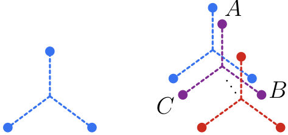
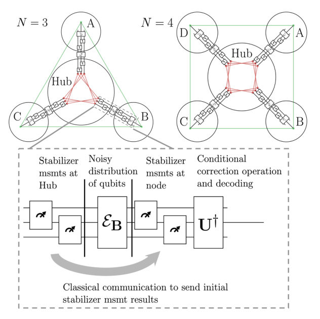
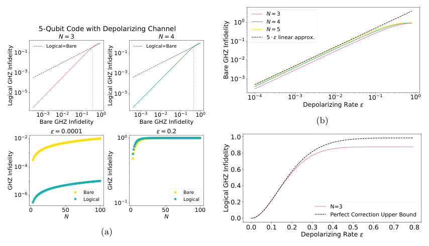
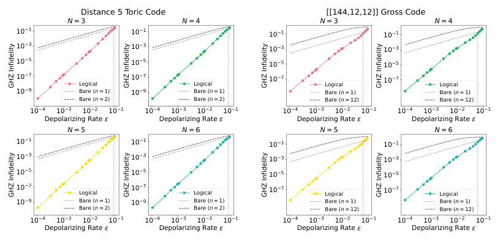
Summary. This work introduces a scalable entanglement distillation protocol for N-qubit stabilizer states, specifically targeting GHZ states, operating over a star network. By leveraging the stabilizer formalism, the authors generalize previous techniques to cover any CSS stabilizer state. This is crucial for distributing high-fidelity quantum resources across multiple, potentially distant quantum processors.
Why it may be interesting. The generalization of distillation protocols to arbitrary CSS stabilizer states and the explicit formulation on a star network topology provide powerful, general tools for quantum network resource management.
Main problem. The paper develops an entanglement distillation protocol to convert multiple noisy copies of an N-qubit Greenberger-Horne-Zeilinger (GHZ) state into fewer, higher-fidelity logical copies.
Main result. The protocol is shown to be generally applicable to any N-qubit Calderbank-Shor-Steane (CSS) stabilizer state and is efficiently scalable on a star network topology.
Method. The scheme is formulated using the stabilizer formalism, relying on local operations and classical communication (LOCC) to perform syndrome measurements and error correction.
Model / system. The system involves N parties sharing multiple copies of an N-qubit stabilizer state, utilizing an arbitrary $[[n, k, d]]$ stabilizer code structure.
Key observables. Final GHZ state fidelity, success probability $p(N)_{ ext{succ}}$, and the structure of the post-measurement stabilizer group $G'$.
Important parameters / regimes. Depolarizing noise rates (up to or above 6%), the number of qubits N, and the code parameters ($n, k, d$).
Assumptions / limitations. The protocol assumes the initial state is an N-qubit stabilizer state and that local operations and classical communication are noiseless.
Figures summary. Figures illustrate the GHZ distillation scheme on a star topology for small N, contrasting party-major and copy-major direct sums for parity check matrices.
Paper structure. The paper builds from defining the problem on a star network, detailing the use of the stabilizer formalism for state evolution, proving the general applicability to CSS states, and deriving the success probability for local QEC.
We introduce an entanglement distillation protocol that utilizes an arbitrary $[[n,k,d]]$ stabilizer code to convert $n$ raw copies of an $N$-qubit Greenberger-Horne-Zeilinger (GHZ) state into $k$ logical copies in the presence of Pauli noise. Our explicit formulation of the scheme on a star network topology is efficiently scalable to arbitrary $N$, requires only local operations, and minimizes the impact of errors on idle physical qubits, enabling the distribution of high-fidelity entangled logical states between any number of quantum processors. We report the results of numerical experiments using the 5-qubit code, toric code, and $[[144,12,12]]$ bivariate bicyle code to protect against independent single-qubit depolarizing noise on all qubits. Our encoding scheme improves the final GHZ state fidelity relative to a single bare GHZ state sent over the same noisy channel for depolarizing rates up to or above $6 \%$ for all codes tested. Additionally, we use the stabilizer formalism to prove that our protocol can be applied to any $N$-qubit Calderbank-Shor-Steane (CSS) stabilizer state, from which the GHZ state emerges as a special case. This result explicitly establishes the working principle of previous stabilizer-based Bell pair and GHZ state distillation schemes, and generalizes such protocols beyond the traditionally considered states. We also show that some stabilizer codes can distill any stabilizer state with our protocol.
Authors: Xiaofeng Wang, Zebo Tang, Zhangbu Xu, Chi Yang, Wangmei Zha
Type: theory · Category: statistical mechanics · PDF: https://arxiv.org/pdf/2609.38579v1
Analysis basis: full PDF text, analyzed in chunks
Topic relevance: Keldysh / 2PI / non-Gaussian methods 1/5
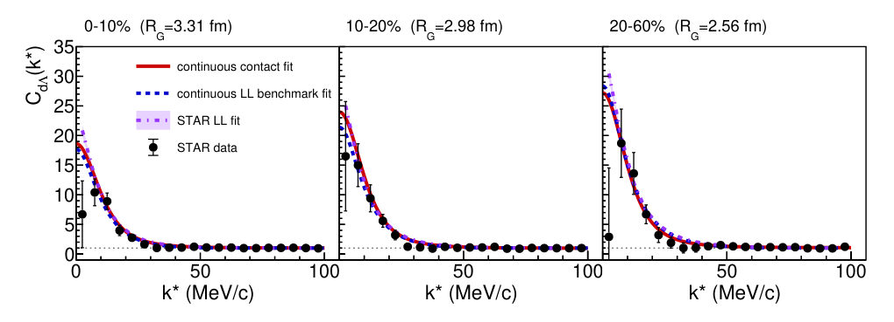
Summary. This work introduces an effective contact theory to unify the description of exotic bound states (like Kmu atoms) and continuum particle correlations in the extreme environment of heavy-ion collisions. By replacing sharp cutoffs with a regulated kernel, the theory posits that both observables stem from a single underlying two-particle density matrix. This establishes a powerful, general methodology for analyzing strongly interacting, expanding matter.
Why it may be interesting. The concept of relating bound states and continuum correlations via a universal contact term is highly relevant to non-equilibrium many-body physics, echoing ideas used in quantum optics and open quantum systems where short-range interactions dominate.
Main problem. The paper develops a theory to relate the production of loosely bound states to continuum two-particle correlations in strongly interacting, expanding matter, addressing the challenge of scale separation.
Main result. The effective contact theory unifies bound and continuum observables as projections of a common two-particle density matrix, providing a general framework for coalescence and correlation studies.
Method. It replaces the hard momentum cutoff of conventional coalescence models with a regulated Bethe-Peierls kernel, derived from an effective contact theory based on Tan's universal relations.
Model / system. The study uses relativistic heavy-ion collisions (like STAR) as the physical laboratory, focusing specifically on the analysis of Coulomb-bound Kmu atoms.
Key observables. Atom yield, two-particle correlations (e.g., STAR dLambda correlations), and the common two-particle density matrix.
Important parameters / regimes. Localization momentum scale ($p_0$), source scale ($\Lambda_{fo}$), and the effective contact residue ($C$).
Assumptions / limitations. The core assumption is that bound and continuum populations originate from projections of a single, common two-particle density matrix at freeze-out.
Paper structure. The paper builds from the general concept of Tan's contact to develop the effective theory, applying it first to the idealized case of Kmu atoms, and finally testing the framework using continuum correlation data from heavy-ion collisions.
Short-distance correlations generate universal relations that can be independent of microscopic details. Tan's contact is a prominent example, connecting close pairs, high-momentum constituents, and bound-state formation across atomic, condensed-matter, and nuclear systems. Whether an analogous universality governs the nonequilibrium freeze-out of relativistic QCD matter is an open question. We develop an effective contact theory that relates the production of loosely bound states to continuum two-particle correlations in heavy-ion collisions. The construction replaces the hard relative-momentum cutoff of conventional coalescence by a regulated Bethe--Peierls kernel: freeze-out localization fixes its momentum scale, while the composite yield fixes its contact residue. Bound and continuum observables then become projections of a common two-particle density matrix rather than independent phenomena. Coulomb-bound $Kμ$ atoms provide an ideal realization because their atomic, production, and source scales are widely separated. A contact-theory analysis of STAR $dΛ$ correlations supplies a first bound--continuum consistency test and demonstrates how inferred near-threshold parameters can depend on the finite expanding source. The framework establishes a general strategy for relating coalescence, correlations, and exotic bound states in strongly interacting expanding matter.
Authors: Diego Ruiz, Aleksander Kubica
Type: theory · Category: quantum information and computing · PDF: https://arxiv.org/pdf/2609.39016v1
Analysis basis: full PDF text, analyzed in chunks
Topic relevance: quantum measurements 1/5
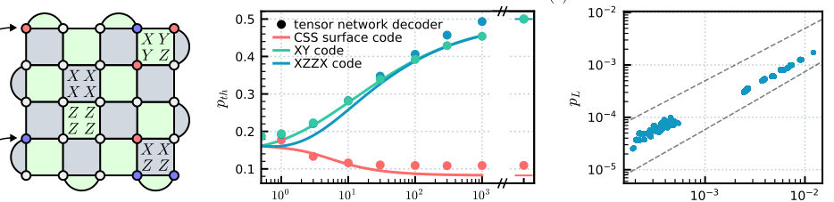
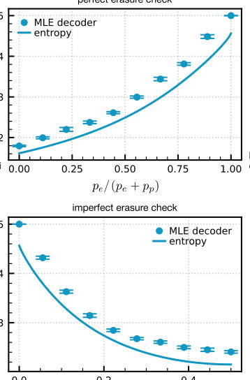
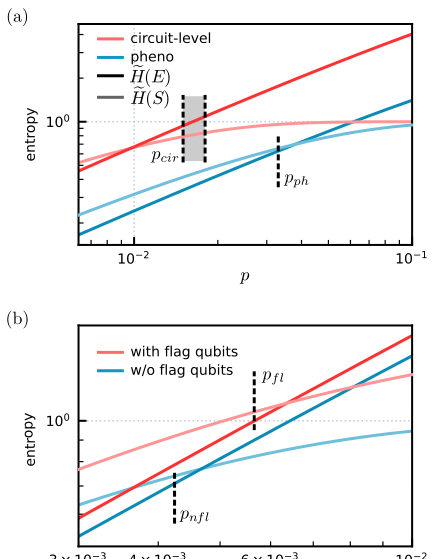
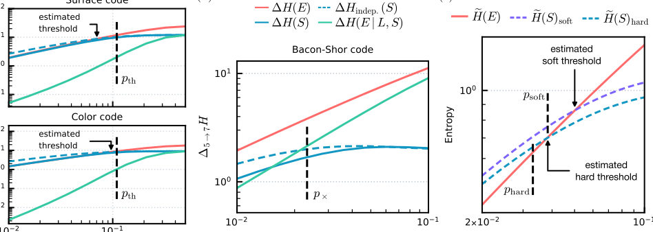
Summary. This work introduces an entropy-based heuristic to predict the performance threshold of quantum error correction codes. By comparing the entropy generated by physical noise against the information extracted via syndrome measurements, the authors provide a simple, generalizable tool. This method successfully predicts thresholds across diverse code types and noise models, offering significant phenomenological insight into QEC performance.
Why it may be interesting. The development of simple, generalizable heuristics that match complex simulation results provides powerful, 'back-of-the-envelope' tools for assessing QEC feasibility without running massive simulations.
Main problem. The paper aims to develop simple, predictive heuristics for determining the performance threshold of various Quantum Error Correction (QEC) protocols, circumventing the intractability of exact analytical calculations.
Main result. An entropy-based proxy successfully captures the main trends across diverse QEC settings, yielding threshold estimates in good agreement with computationally intensive numerical simulations.
Method. The core method involves developing an entropy decomposition that locally compares the noise entropy (from physical errors) with the syndrome entropy (information gained from stabilizer measurements).
Model / system. The analysis applies to various QEC codes, including Clifford-deformed surface codes (XY, XZZX) and color codes, tested under different noise models such as biased Pauli noise, erasure noise, and circuit-level noise.
Key observables. Threshold ($p_{th}$), Noise Entropy ($H(E)$), Syndrome Entropy ($H(S)$), and Logical Error Rate ($p_L$).
Important parameters / regimes. Physical error rate ($p$), noise bias ($\eta$), and code size ($n$).
Assumptions / limitations. The proxy neglects correlations between stabilizer outcomes and the contribution from code degeneracy, and for soft information, it relies on modeling measurement outcomes with Gaussian distributions.
Figures summary. Figures compare the entropy threshold lines derived from the proxy against numerical results for surface and color codes under various noise conditions (e.g., Fig. 1 and Fig. 3).
Paper structure. The paper introduces the entropy-based proxy by deriving bounds on the logical error rate using conditional entropy, then applies this heuristic to various code types and noise models, culminating in discussions on incorporating soft information.
The rapidly growing landscape of quantum error-correction (QEC) protocols has produced a wealth of numerical data, but comparatively few heuristics for understanding and predicting their performance. Here, we develop a simple entropy-based proxy that predicts the thresholds of a variety of QEC protocols, ranging from the code-capacity setting of Clifford-deformed surface codes with biased Pauli or erasure noise to the circuit-level noise model of the surface or color codes with flag qubits. Our proxy estimates the threshold by locally comparing the noise entropy with the error information gained via stabilizer measurements (or spacetime detectors and flag outcomes in the circuit-level settings). Despite neglecting correlations between stabilizer outcomes and the contribution from code degeneracy, the proxy captures the main trends across diverse settings and yields threshold estimates in good agreement with numerical results. Our work develops much-needed phenomenology that enables simple back-of-the-envelope estimates of QEC performance, recovering and providing an explanation for the results of computationally intensive detailed simulations.
Authors: Kohdai Kuroiwa
Type: theory · Category: quantum information and computing · PDF: https://arxiv.org/pdf/2609.38328v1
Analysis basis: full PDF text, analyzed in chunks
Topic relevance: quantum measurements 1/5
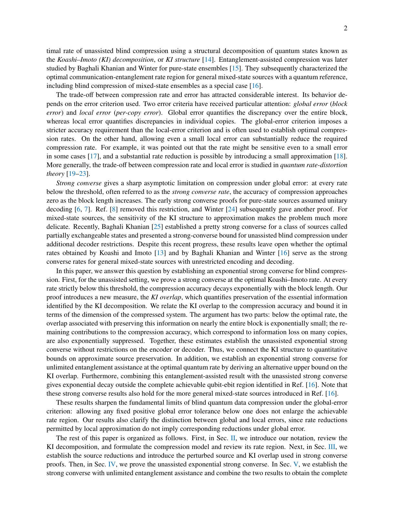
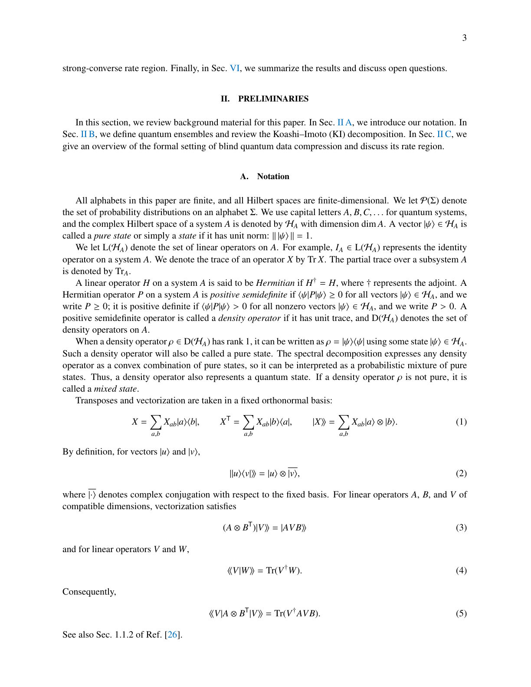
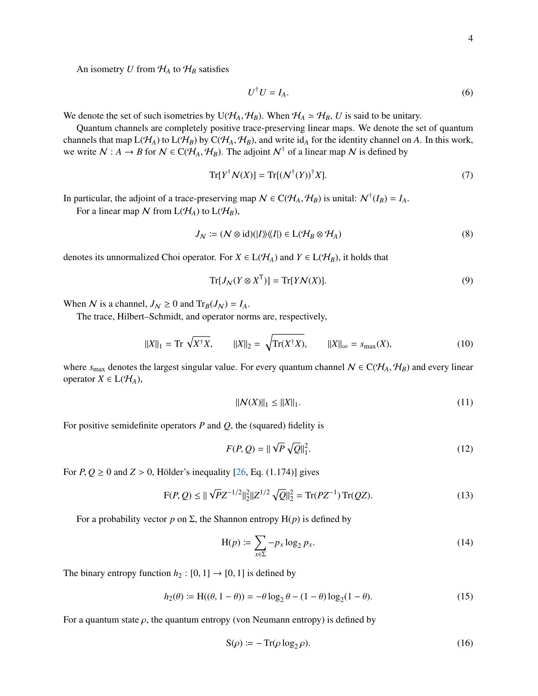
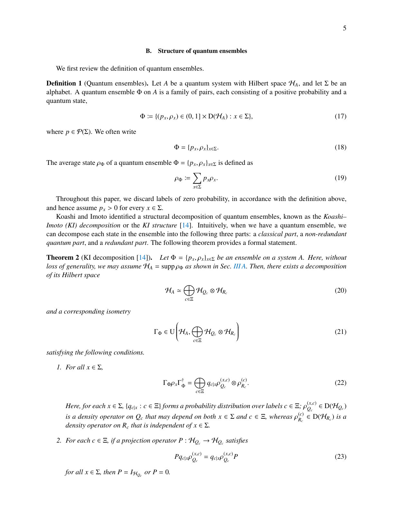
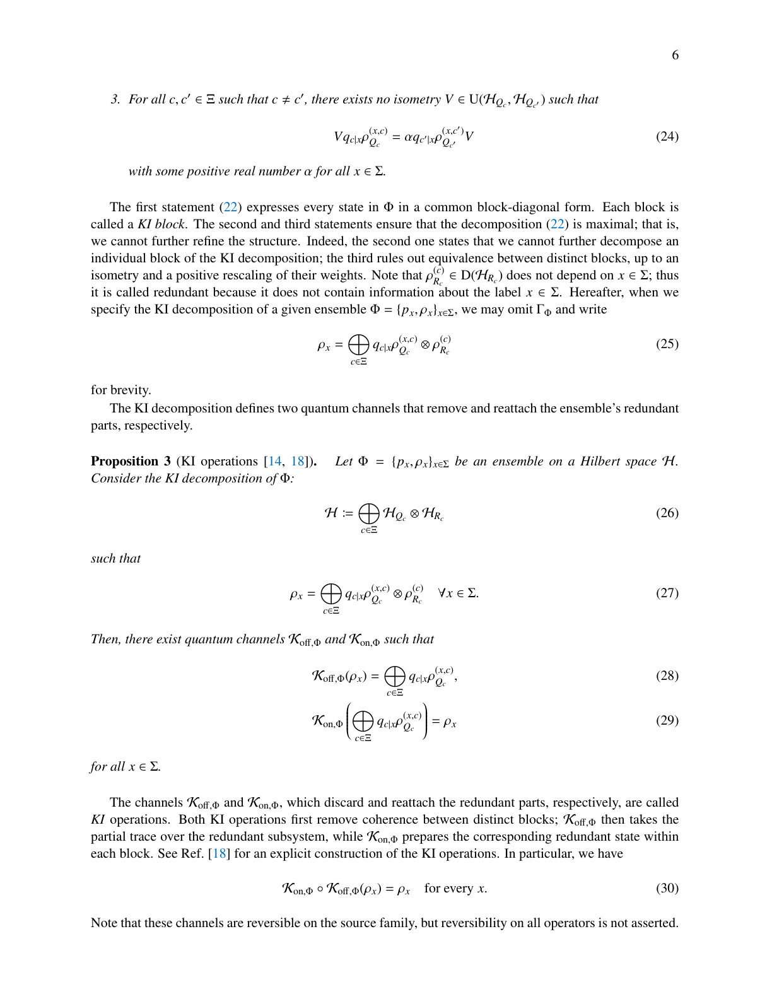
Summary. This work rigorously establishes exponential strong converse theorems for blind quantum data compression of mixed-state sources. It resolves the difficulty of analyzing mixed states by introducing a new overlap quantity that connects source information preservation to the transmitted system dimension. The results provide sharp fundamental limits for quantum communication tasks.
Why it may be interesting. While focused on quantum information theory, the rigorous analysis of structural decomposition (KI) and the establishment of fundamental limits (strong converse) provide powerful mathematical tools applicable to characterizing resource constraints in complex quantum systems.
Main problem. The paper establishes exponential strong converse theorems for the blind quantum data compression of finite-dimensional mixed-state sources, considering both unassisted and entanglement-assisted scenarios.
Main result. It proves that for general mixed-state sources, the compression fidelity decays exponentially with the block length when the rate falls below the optimal threshold, resolving a long-standing open question in the field.
Method. The proof introduces a new KI overlap quantity and combines it with fidelity bounds derived from analyzing the kernel of an operator $L_\Phi$, leading to exponential decay estimates.
Model / system. The model involves quantum data compression of mixed-state sources $\Phi = \{(p_x, ho_x)\}_{x \in \Sigma}$ where the sender (Alice) does not know the classical label $x$. The analysis uses the Koashi–Imoto (KI) decomposition to characterize the source structure.
Key observables. Compression Fidelity ($F_n$), achievable rate region $(R, E)$, and the KI overlap quantity.
Important parameters / regimes. Compression rate ($R$), entanglement assistance ($E$), and the block length ($n$).
Assumptions / limitations. The analysis relies on the structural decomposition provided by the KI decomposition and the existence of informationally complete measurements.
Paper structure. The paper builds from preliminaries defining the rate region via KI decomposition, then proves the unassisted exponential strong converse, followed by the result for entanglement assistance, and finally combining both bounds.
We establish exponential strong converse theorems for blind quantum data compression of finite-dimensional mixed-state sources, with and without entanglement assistance. Blind compression is a fundamental quantum information processing task in which the sender aims to transmit quantum states without direct access to the classical label. Strong converse is a notable aspect of data compression: the accuracy of the compression abruptly drops down to zero once the compression rate goes below a threshold. Strong converses for data compression have been established for pure-state sources; however, for mixed-state sources, the optimal compression rate is determined by a structural decomposition of quantum states and can change substantially under small perturbations. This sensitivity makes it difficult to quantitatively analyze the trade-off between compression rate and error. Despite recent progress, whether a strong converse holds at the optimal rate has remained unresolved in general. In this work, we resolve this question affirmatively. For unassisted compression, we show that at every rate below the optimum, the accuracy decays exponentially with the block length for general mixed-state sources without restrictions on protocols. We also prove exponential strong converse for blind compression with unlimited entanglement assistance at its optimal rate. Combining the two strong converse bounds yields exponential decay at every compression-entanglement rate pair outside the complete achievable rate region. Our proof introduces a new overlap quantity based on the structure of quantum states; this quantity connects preservation of the source information to the dimension of the transmitted system. We expect that this approach provides useful tools for converse analyses of other quantum information-processing tasks involving mixed states.
Authors: Aleksandrs Krivcenko, Tuyen Nguyen, Ronald de Wolf
Type: theory · Category: quantum information and computing · PDF: https://arxiv.org/pdf/2609.40331v1
Analysis basis: full PDF text, analyzed in chunks
Topic relevance: quantum measurements 1/5
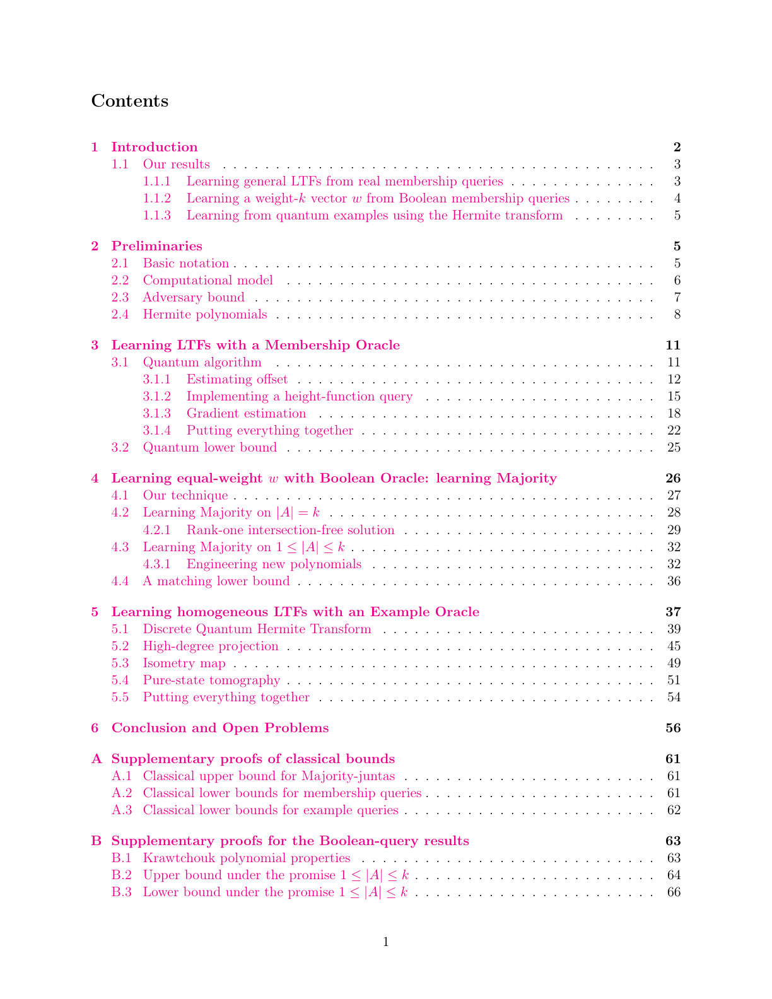
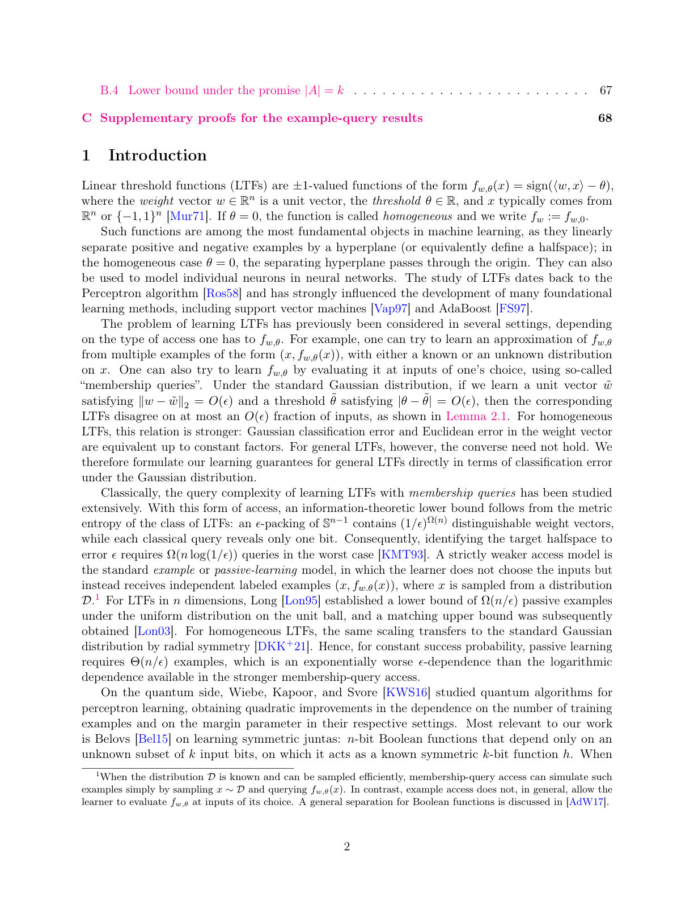
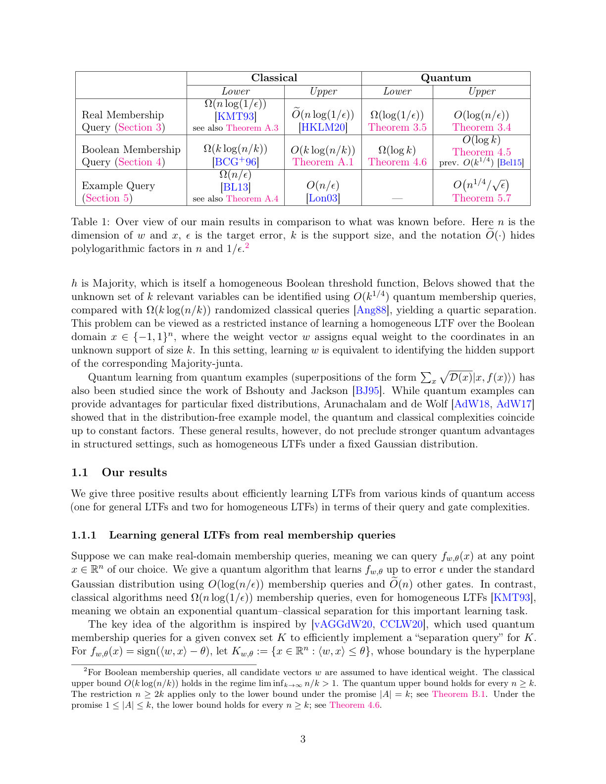
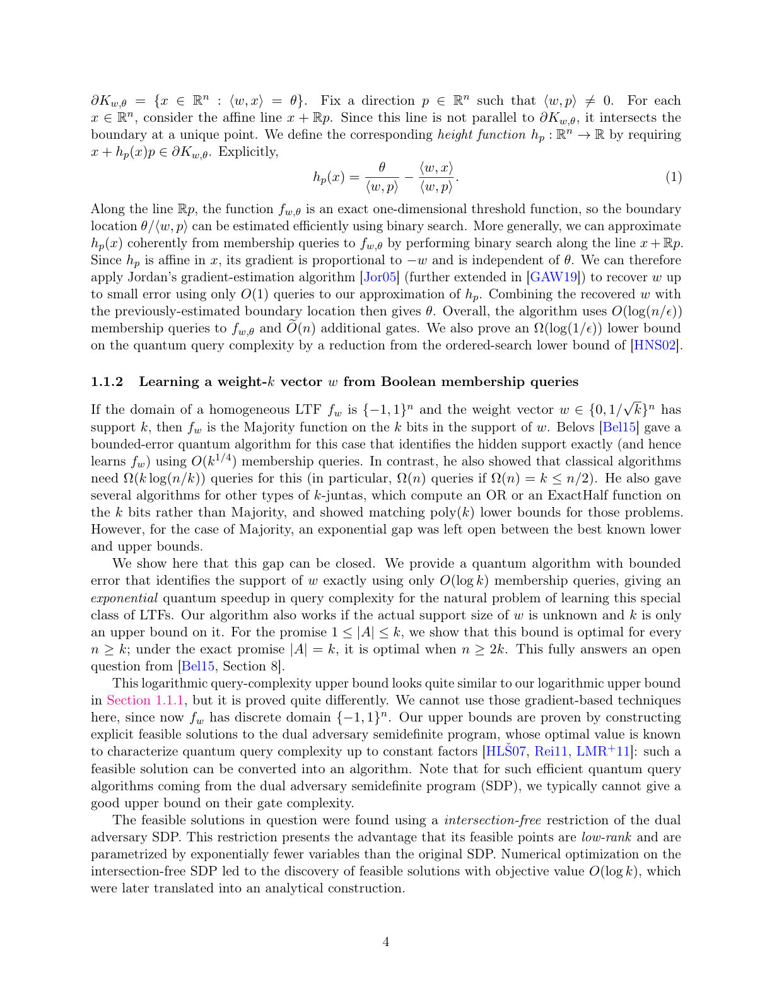
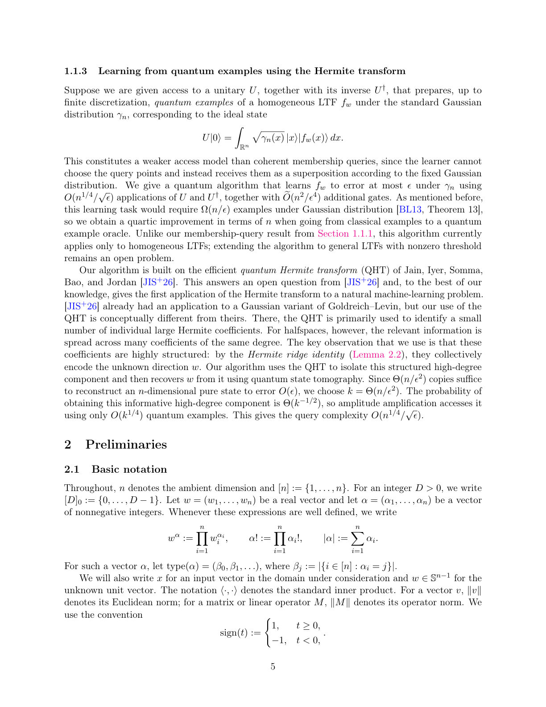
Summary. This paper develops quantum algorithms to efficiently learn Linear Threshold Functions (LTFs) under various query models, including real-domain queries and quantum examples. It achieves significant quantum advantages, such as exponential speedups for Boolean LTFs and polynomial speedups for Gaussian-based LTFs. The work advances the theory of quantum computation applied to fundamental problems in machine learning and pattern recognition.
Why it may be interesting. The quantum speedups demonstrated for learning fundamental machine learning concepts like LTFs are highly relevant to quantum machine learning theory, showing concrete advantages of quantum computation over classical methods in information processing tasks.
Main problem. The paper addresses the problem of learning Linear Threshold Functions (LTFs), which are fundamental in machine learning for linear discrimination, using various quantum access models.
Main result. The authors provide quantum algorithms achieving significant speedups over classical bounds for learning LTFs, particularly showing exponential improvements for Boolean LTFs and polynomial improvements for LTFs accessed via quantum examples.
Method. The techniques involve adapting quantum query algorithms for continuous domains (real membership queries) and leveraging the efficient Hermite transform for accessing quantum examples under Gaussian measures.
Model / system. The model is abstract, focusing on learning the function $f_{w, heta}(x) = ext{sign}(\langle w, x angle - heta)$ over domains like $\mathbb{R}^n$ or $\{-1, 1\}^n$. The quantum access is modeled via membership queries or a unitary $U$ generating quantum examples.
Key observables. The primary observables are the function $f_{w, heta}(x)$ itself, and the complexity measures are the number of queries (membership queries or $U$ applications) and the number of quantum gates.
Important parameters / regimes. Key parameters include the dimension $n$, the error $\epsilon$, the support size $k$ (for Boolean cases), and the threshold $ heta$.
Assumptions / limitations. The analysis relies on specific access models, such as the availability of real-domain membership queries or the existence of a unitary $U$ for generating quantum examples under Gaussian measure.
Figures summary. No figures or tables were explicitly described in the notes, but the analysis heavily references numbered equations to establish lower and upper bounds on query complexity.
Paper structure. The paper is structured around three distinct access models: 1) Real-domain membership queries for general LTFs; 2) Boolean membership queries for structured LTFs (Majority function); and 3) Quantum examples accessed via a unitary $U$ under Gaussian measure.
Linear threshold functions are $f_{w,θ}(x)=\text{sign}(\langle x,w \rangle -θ)$, where the weight vector $w\in\mathbb{R}^n$ is a unit vector, $θ\in\mathbb R$ is a threshold, and typically $x\in\mathbb{R}^n$ or $x\in\{-1,1\}^n$. When $θ=0$, the LTF is called homogeneous, and we write $f_w:=f_{w,0}$. Such functions are among the most important objects in machine learning, since they serve to linearly discriminate positive and negative examples. We give three positive results about learning LTFs: 1. Suppose we can make real-domain queries, meaning we can compute $f_{w,θ}(x)$ at any $x\in\mathbb{R}^n$ of our choice. We give a quantum algorithm that learns $f_{w,θ}$ up to Euclidean error~$ε$ using $O(\log(n/ε))$ membership queries and $\widetilde{O}(n)$ other gates. Then we have also learned $f_{w,θ}$ up to error $O(ε)$ when $x$ is Gaussian. Classical algorithms need $Ω(n\log(1/ε))$ queries. 2. A homogeneous LTF $f_w$ on domain $\{-1,1\}^n$ where $w$ has only $k$ nonzero entries of the same value, is the Majority function on the support of $w$. Belovs gave a bounded-error quantum algorithm that identifies the hidden support exactly (and hence learns $f_w$) using $O(k^{1/4})$ queries. We give an exponential improvement, using $O(\log k)$ queries. 3. Suppose we have a unitary $U$ that can produce (discretized) \emph{quantum examples} under Gaussian measure, corresponding to $\int_x \sqrt{γ_n(x)}|x\rangle |f_w(x)\rangle dx$. This is a weaker access model than membership queries. We give a quantum algorithm based on the efficient \emph{Hermite transform} of Jain et al.\ to learn homogeneous LTFs~$f_w$ with error~$ε$ under the Gaussian distribution, using $O(n^{1/4}/\sqrtε)$ applications of $U$ and $U^\dagger$ and $\widetilde{O}(n^2/ε^4)$ other gates.
Authors: Shihao Ru, Bikun Li, Weibo Gao, Liang Jiang
Type: theory · Category: quantum information and computing · PDF: https://arxiv.org/pdf/2609.40203v1
Analysis basis: full PDF text, analyzed in chunks
Topic relevance: quantum measurements 1/5
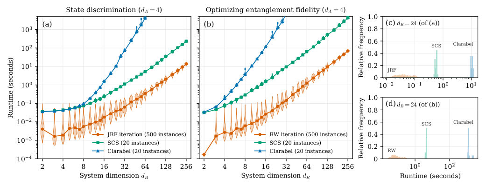
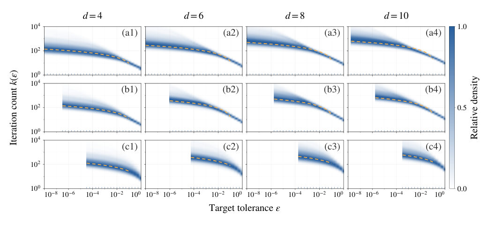
Summary. This paper develops a generalized Reimpell-Werner iteration to solve quantum optimization problems formulated as Semidefinite Programs. By proving convergence under specific initialization conditions, it offers a powerful, scalable numerical tool for calculating quantities like entanglement fidelity. This advances the theoretical understanding of solving complex quantum information tasks.
Why it may be interesting. It provides a computationally tractable and rigorously analyzed iterative method for solving complex optimization problems arising in quantum information theory, which is crucial for simulating quantum processes.
Main problem. The paper addresses the optimization of quantum protocols, such as state discrimination and entanglement fidelity, which are formulated as Semidefinite Programs (SDPs).
Main result. The authors generalize the Reimpell-Werner iteration to solve these SDPs, proving convergence to a global optimum under suitable initialization conditions with an asymptotic iteration complexity of $\mathcal{O}(1/\varepsilon)$.
Method. The core method is the generalization of the Reimpell-Werner iteration, an iterative matrix update scheme designed to solve SDPs by respecting underlying physical constraints.
Model / system. The framework applies to quantum information protocols involving quantum measurements and channels, utilizing density matrices and cost matrices derived from these physical tasks.
Key observables. Entanglement Fidelity, Success Probability, Objective function values, and the convergence rate $\mathcal{O}(1/\varepsilon)$.
Important parameters / regimes. The required support overlap conditions for initialization, and the tolerance $\varepsilon$ for the desired accuracy.
Assumptions / limitations. Convergence is guaranteed if the initialization satisfies suitable support overlap conditions, and the analysis relies on the SDP formulation being well-posed.
Figures summary. Figures compare the runtime performance of various solvers (RW, JRF, etc.) and show convergence tracking for error measures using GUE sampled Hermitian cost matrices.
Paper structure. The paper first establishes the SDP formulation for quantum optimization, then introduces and generalizes the RW iteration, proves its convergence properties, and finally provides rigorous error bounds and numerical stability checks.
Quantum measurements and channels determine how information is extracted, encoded, and transmitted in quantum protocols. Optimizing their performance often requires numerical methods that remain practical as Hilbert space dimensions increase. The Reimpell-Werner iteration offers a practical approach to these tasks through repeated matrix updates that respect the constraints. Here, we generalize this iteration to linear objectives with arbitrary Hermitian cost matrices. We prove that the iterates converge to a global optimum whenever the initialization satisfies suitable support overlap conditions. For each fixed problem, choice of iteration parameters, and admissible initialization, $\mathcal{O}(1/\varepsilon)$ iterations suffice asymptotically to bring the objective value within $\varepsilon$ of the optimum. These results provide a rigorous foundation for the iteration and broaden the class of optimization problems to which its convergence guarantees apply.
Authors: Vahid R. Asadi, Shuichi Hirahara, Nobutaka Shimizu
Type: theory · Category: quantum information and computing · PDF: https://arxiv.org/pdf/2609.39823v1
Analysis basis: full PDF text, analyzed in chunks
Topic relevance: quantum measurements 1/5
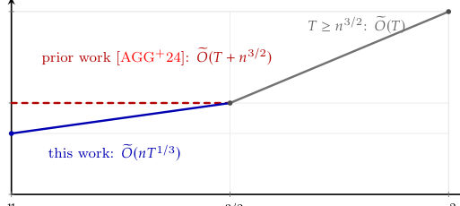
Summary. This paper presents an improved quantum random self-reduction for solving linear problems over finite fields when the underlying linear map is only accessible via an imperfect oracle. By utilizing the Bogolyubov–Ruzsa subspace and quantum search techniques, the authors achieve a time complexity of $\widetilde{O}(n T^{1/3})$, which is a substantial improvement over existing quantum bounds.
Why it may be interesting. This work provides a significant theoretical advancement in the complexity of quantum algorithms for solving average-case problems, demonstrating a superior time complexity compared to prior quantum reductions in the field.
Main problem. The paper addresses the development of quantum random self-reductions to solve linear problems over finite fields when access to the underlying linear map is only available on a small fraction of inputs.
Main result. A uniform quantum reduction is established that computes the matrix-vector product $Mx$ with high probability in time $\widetilde{O}(n T^{1/3})$, significantly improving upon previous bounds.
Method. The reduction leverages the Bogolyubov–Ruzsa subspace from additive combinatorics and employs quantum search techniques based on amplitude amplification to avoid explicitly learning the subspace structure.
Model / system. The model is an abstract computational setting involving a linear map $M \in \mathbb{F}^{n imes n}$ and an imperfect oracle $\mathcal{O}$ that provides access to $Mx$ only on an $\epsilon$-fraction of inputs.
Key observables. The primary observable is the success probability of computing $Mx$ for an arbitrary input $x$, which is maintained at at least $2/3$.
Important parameters / regimes. Key parameters include the dimension $n$, the query cost $T$ of the oracle, and the error fraction $\epsilon$. The running time depends critically on the relationship between $n$ and $T$.
Assumptions / limitations. The analysis assumes constant field size and a fixed error fraction $\epsilon$. The improvements rely on avoiding computationally expensive steps like explicitly recovering a basis for the orthogonal complement of the Bogolyubov–Ruzsa subspace.
Figures summary. Figure 1 compares the derived running time bound, $e^{O(n T^{1/3})}$, against the running times of prior state-of-the-art reductions across different regimes of $T$.
Paper structure. The paper builds upon previous work by first establishing the necessary theoretical tools (like the BR subspace) and then constructing a multi-stage quantum algorithm. This involves defining an amplified oracle $\mathcal{O}'$, using it to build a 'BR table,' and finally executing a quantum search procedure to achieve the desired complexity bounds.
We study quantum random self-reductions for linear problems over finite fields. Let $M\in\mathbb{F}^{n\times n}$ be an arbitrary matrix, and let $\mathcal{O}$ be an oracle that agrees with the linear map $x\mapsto Mx$ on an $\varepsilon$-fraction of inputs $x\sim\mathbb{F}^n$. Given coherent access to $\mathcal{O}$ and coherent entry access to $M$, we give a uniform quantum reduction that computes $Mx$ on any prescribed input $x$ with probability at least $2/3$ in time $\widetilde{O}(nT^{1/3})$, for $n\le T\le n^{3/2}$ and constant field size and $\varepsilon$, where $T$ is the cost of one coherent query to $\mathcal{O}$. In particular, when $T=\widetilde{O}(n)$, the reduction runs in time $\widetilde{O}(n^{4/3})$, improving the $\widetilde{O}(n^{3/2}+T)$ reduction of Asadi, Golovnev, Gur, Shinkar, and Subramanian (SODA 2024). Our reduction uses the Bogolyubov--Ruzsa subspace guaranteed by additive combinatorics, but it avoids learning this subspace explicitly, which was computationally expensive for the previous reduction; in particular, it does not recover a basis for its orthogonal complement. The main technical step is to decompose the inputs into sparse pieces and find a vector that lies outside the Bogolyubov--Ruzsa subspace via a quantum search based on amplitude amplification. This yields a tunable tradeoff between the cost of querying the average-case oracle and the cost of verifying matrix-vector products.
Authors: Arjan Cornelissen, Simon Apers, Sander Gribling
Type: theory · Category: quantum information and computing · PDF: https://arxiv.org/pdf/2609.40217v1
Analysis basis: full PDF text, analyzed in chunks
Topic relevance: quantum measurements 1/5
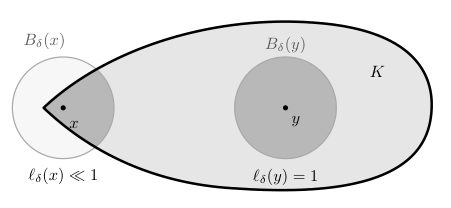
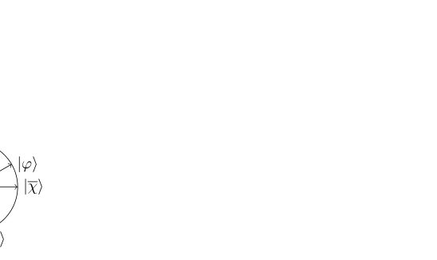
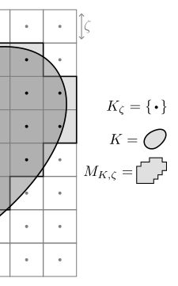
Summary. This paper presents a significant advancement in quantum algorithms for computational geometry, specifically volume estimation. The authors introduce a novel 'transducer' framework that allows for the amortization of quantum walk costs. By applying this framework, they improve the quantum query complexity bound for estimating the volume of a convex body in high dimensions.
Why it may be interesting. The development of the amortized quantum walk framework and the transducer toolkit represents a significant methodological advance in quantum computation, providing tools to tackle complex quantum algorithms previously limited by resource estimation.
Main problem. The paper addresses the problem of estimating the volume of a convex body in high dimensions, a task central to computational geometry.
Main result. They achieve a quantum query complexity of $\text{eO}(d^{3.5} + d^{1.75}/\varepsilon)$, improving upon previous quantum bounds by developing a novel amortized quantum walk framework.
Method. The core methodology involves developing and utilizing 'transducers'—unitary operations that allow for the amortization of computational costs in quantum circuits. This framework is applied to quantize the state-of-the-art randomized algorithm for volume estimation.
Model / system. The work is theoretical, focusing on quantum algorithms applied to geometric problems. The underlying mathematical structure involves convex bodies $K \subseteq \mathbb{R}^d$ and the estimation of their volume, often related to partition function estimation via Markov Chain Monte Carlo.
Key observables. Query complexity (e.g., $\text{eO}(d^{3.5} + d^{1.75}/\varepsilon)$), volume $\text{Vol}(K)$, and the cost associated with quantum walk operations.
Important parameters / regimes. Dimension $d$, error tolerance $\varepsilon$, and the parameters governing the Gaussian measure $\pi_\beta$.
Assumptions / limitations. The primary technical assumption is the ability to use the amortized analysis of the ball walk, which was previously blocked by the lack of a suitable quantum amortized framework.
Figures summary. Not specified in the notes, but the structure implies comparisons of query complexity bounds across different algorithmic approaches.
Paper structure. The paper first introduces the volume estimation problem and the state-of-the-art bounds. It then details the novel 'transducer' framework, develops specific transducers (e.g., for amplitude amplification and quantum walk reflection), and finally applies this framework to quantize the Cousins-Vempala algorithm to achieve the improved complexity bound.
The volume estimation problem is a classic task in computational geometry. The development of randomized algorithms for this problem spurred the development of many influential algorithmic techniques related to Markov Chain Monte Carlo and simulated annealing, and the problem connects to several important geometrical results, like the recently-resolved KLS conjecture. In this work, we quantize the state-of-the-art $\widetilde{O}(d^{3.5}+d^3/\varepsilon^2)$-query randomized algorithm developed by Cousins and Vempala, and obtain a $\widetilde{O}(d^{3.5} + d^{1.75}/\varepsilon)$-query quantum algorithm, improving over the $\widetilde{O}(d^{3.5} + d^{2.25}/\varepsilon)$ state-of-the-art bound. Our key technical contribution is a framework for amortizing the cost of a quantum walk. The framework is based on the recent transducer toolkit introduced by Belovs, Jeffery and Yolcu. It is this amortized quantum walk framework that allows us to exploit the amortized analysis of the ball walk by Cousins and Vempala, thus overcoming the key barrier that previously barred its quantum implementation.
Authors: Zhu Sun, Zhenyu Cai
Type: theory · Category: quantum information and computing · PDF: https://arxiv.org/pdf/2609.39522v1
Analysis basis: full PDF text, analyzed in chunks
Topic relevance: quantum measurements 1/5
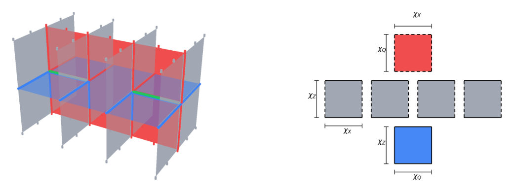
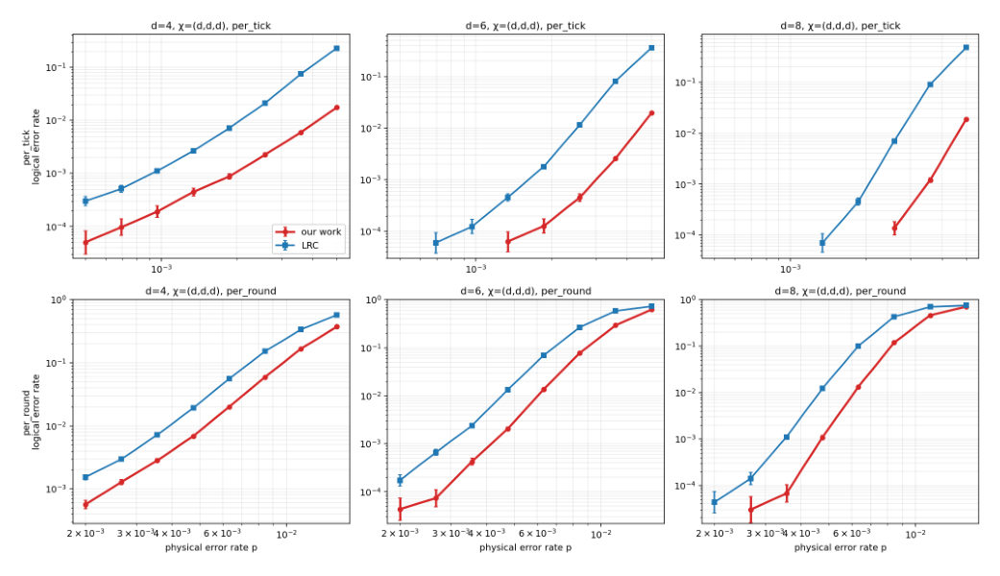
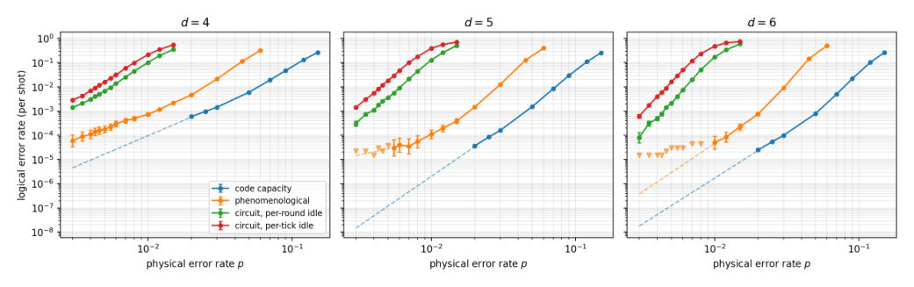
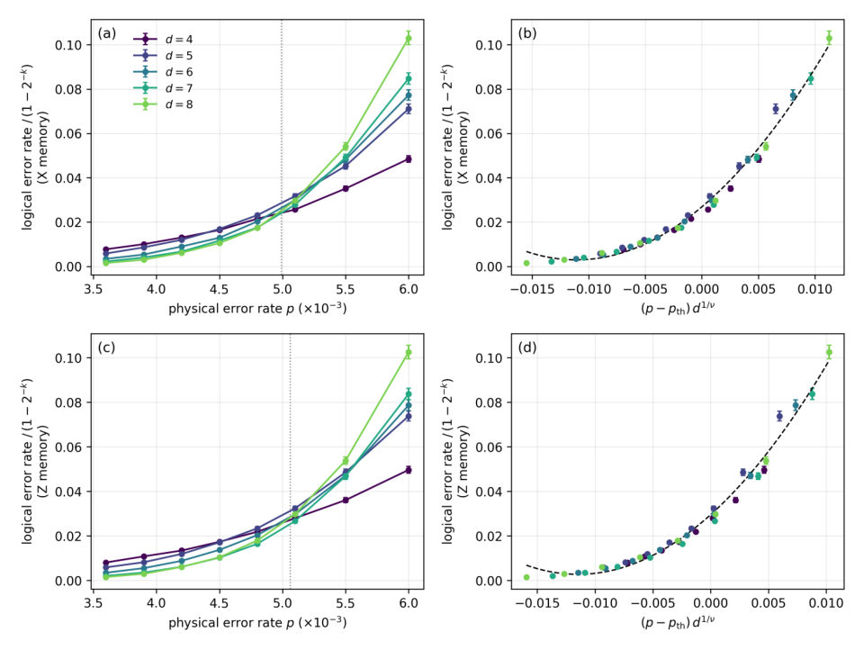
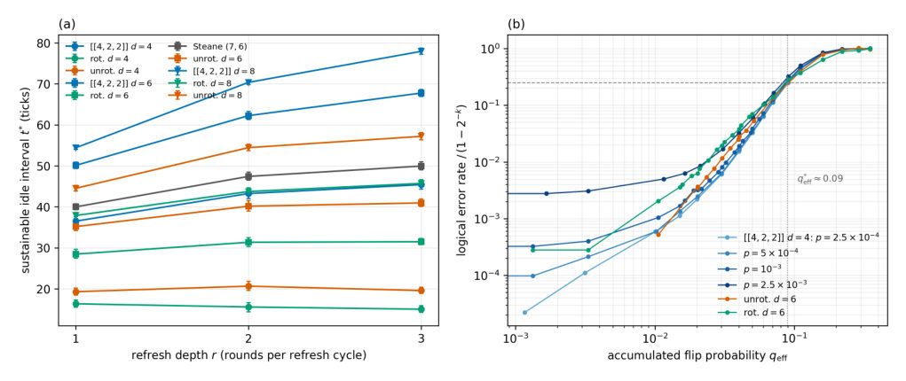
Summary. This work analyzes layer codes as advanced quantum memories by simulating their performance under realistic circuit-level noise. The authors introduce a novel scheduling technique that improves circuit depth and achieves superior idle robustness compared to surface codes. The findings suggest layer codes are highly competitive, provided the associated hardware overheads are manageable.
Why it may be interesting. It provides concrete, quantitative benchmarks for next-generation QEC hardware by rigorously analyzing circuit overheads and noise resilience beyond simple code distance arguments.
Main problem. The paper evaluates layer codes as active quantum memories under realistic circuit-level noise, focusing on the complex syndrome extraction circuit required for repeated measurements.
Main result. Layer codes achieve lower logical error rates than general-purpose schedulers at half the CNOT depth per round and significantly outperform surface codes in idle robustness, though this comes with higher overhead.
Method. The authors developed a novel, decoder-free scheduler that constrains hook propagation first and compresses depth afterward, comparing the resulting circuits against standard surface code implementations.
Model / system. The system utilizes layer codes, which are 3D local CSS codes formed by quasi-concatenating a CSS input code with unrotated surface code patches, for quantum error correction.
Key observables. Logical error rate (LER), circuit depth (CNOT depth per round), idle robustness (sustainable idle interval), and physical overhead (qubits, gates per logical qubit).
Important parameters / regimes. Circuit-level noise threshold ($p_{th}$), distance ($d$), and the ratio of idle time tolerance (1.7-3.0 times longer than rotated surface code).
Assumptions / limitations. The analysis focuses on active circuit-level fault-tolerance, and the cost analysis emphasizes that the speed of beyond-2D cross-plane CNOTs is more critical than their fidelity.
Figures summary. The notes reference tables comparing metrics (ticks/round, CNOTs/round) for layer codes and surface codes, and figures illustrating the code structure with input codes like [[4,2,2]].
Paper structure. The paper progresses by first establishing the challenge of syndrome extraction circuits, proposing a two-phase scheduler (constraining hook propagation, then compressing depth), and finally comparing the resulting performance metrics (LER, robustness) against established codes.
Layer codes are three-dimensional local CSS codes of check weight at most six, obtained by quasi-concatenating a CSS input code with unrotated surface code patches. What is established about them describes the code, not the circuit that measures it. In this work, we evaluate them as active memories under circuit-level noise. Doing so first requires a syndrome extraction circuit, and the junction stabilizers that couple the patches rule out borrowing a surface code patch's CNOT schedule. We present a decoder-free scheduler that constrains hook propagation first and compresses depth afterwards, generate circuits for eighteen layer codes across four input codes, and compare them with surface codes of the same distance, simulated and decoded in the same way. The circuits lose no distance to hook errors on [[4,2,2]]-input codes wherever a circuit-distance proof is affordable, and reach a lower logical error rate than those of a general-purpose scheduler for CSS codes at roughly half its CNOT depth per round. Our primary family built from a [[4,2,2]] input code reaches a circuit-level threshold of $5.06(7)\times 10^{-3}$. The layer code outperforms the surface code in terms of idle robustness: at the same distance it tolerates an interval between syndrome extraction rounds 1.7-3.0 times longer than the rotated surface code. This comes at the cost of 1.7-5.0 times more operations per unit time and approximately five times more physical qubits, both per logical qubit. Finally, we model the cost of the beyond-2D cross-plane CNOTs that the construction demands, and find that their speed matters far more than their fidelity.
Authors: Simone Cavazzoni, Changhun Oh
Type: theory · Category: quantum information and computing · PDF: https://arxiv.org/pdf/2609.39226v1
Analysis basis: full PDF text, analyzed in chunks
Topic relevance: quantum measurements 1/5
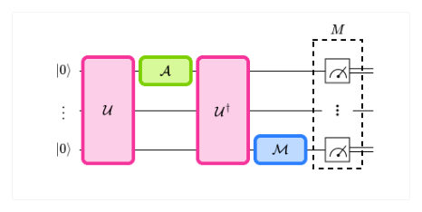
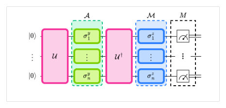
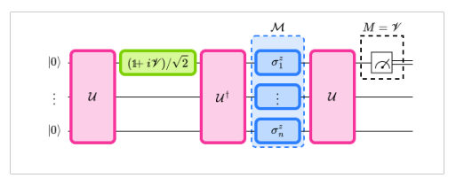
Summary. This paper introduces a novel metrological benchmark using the Quantum Fisher Information (QFI) to test the performance of noisy random quantum circuits. By relating QFI to Out-of-Time-Order Correlators, it bypasses the need to calculate ideal output probabilities. The methodology successfully distinguishes between different types of circuit dynamics (e.g., Haar vs. Clifford) and quantifies noise degradation.
Why it may be interesting. This work provides a powerful, measurable diagnostic tool (QFI) to characterize the complexity and dynamics of quantum circuits, which is crucial for understanding quantum advantage in noisy hardware.
Main problem. The paper addresses the need for a scalable metrological benchmark to assess noisy random quantum circuits without calculating costly ideal output probabilities.
Main result. A metrological benchmark based on Quantum Fisher Information (QFI) and its relation to Out-of-Time-Order Correlators (OTOCs) is proposed, allowing for quantitative assessment of circuit dynamics.
Method. The authors develop protocols using controlled perturbations and analyze the resulting QFI, comparing results for Haar-random versus Clifford circuits, and deriving noise scaling relations.
Model / system. The system under study is random quantum circuits (RCS) acting on $n$ qubits. The analysis involves probing the circuit's response to controlled perturbations, modeled via the QFI.
Key observables. Quantum Fisher Information (QFI), Out-of-Time-Order Correlators (OTOCs), and the variance of the inverse sensitivity.
Important parameters / regimes. The number of qubits ($n$), the perturbation strength ($\phi$), and the noise mixing factor ($F$).
Assumptions / limitations. The analysis assumes a global white-noise model for noise characterization and relies on approximations for the weak signal regime ($\phi \approx 0$) in some protocols.
Figures summary. Figures schematically illustrate the circuit preparations for the local and global perturbation protocols, and the butterfly protocol.
Paper structure. The paper progresses by first establishing the QFI-OTOC link for benchmarking, then detailing protocols for local and global control, comparing Haar and Clifford ensembles, and finally extending the analysis to quantify performance degradation under white noise.
Random circuit sampling is a leading approach to demonstrating quantum computational advantage, but benchmarking noisy implementations through linear cross-entropy requires costly calculations of ideal output probabilities. We propose a metrological benchmark based on the response to controlled perturbations, characterized by quantum Fisher information (QFI). A relation between QFI and out-of-time-order correlators enables protocols with local or global control. For Haar-random circuits, the average QFI approaches its maximal value in the local protocol and grows linearly with the number of qubits under collective control. In contrast, Clifford circuits yield zero QFI despite extensive operator spreading, showing that the response probes dynamical properties beyond spreading alone. A butterfly protocol further uses system size to enhance sensitivity, yielding a mean inverse sensitivity proportional to the number of qubits with single-qubit readout. Its fluctuations distinguish the Haar and Clifford ensembles despite their identical mean responses. For noisy implementations, we derive an exact relation between the noisy and ideal QFI within a global white-noise model, providing a quantitative reference for the degradation of the benchmark. These protocols enable metrological benchmarking of noisy random quantum circuits without computing ideal output probabilities.
Authors: Minki Hhan, Changhun Oh, Vaughn Sohn
Type: theory · Category: quantum information and computing · PDF: https://arxiv.org/pdf/2609.40301v1
Analysis basis: full PDF text, analyzed in chunks
Topic relevance: quantum measurements 1/5
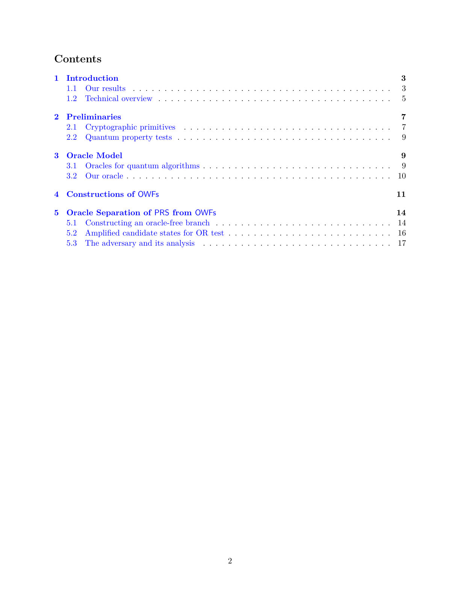
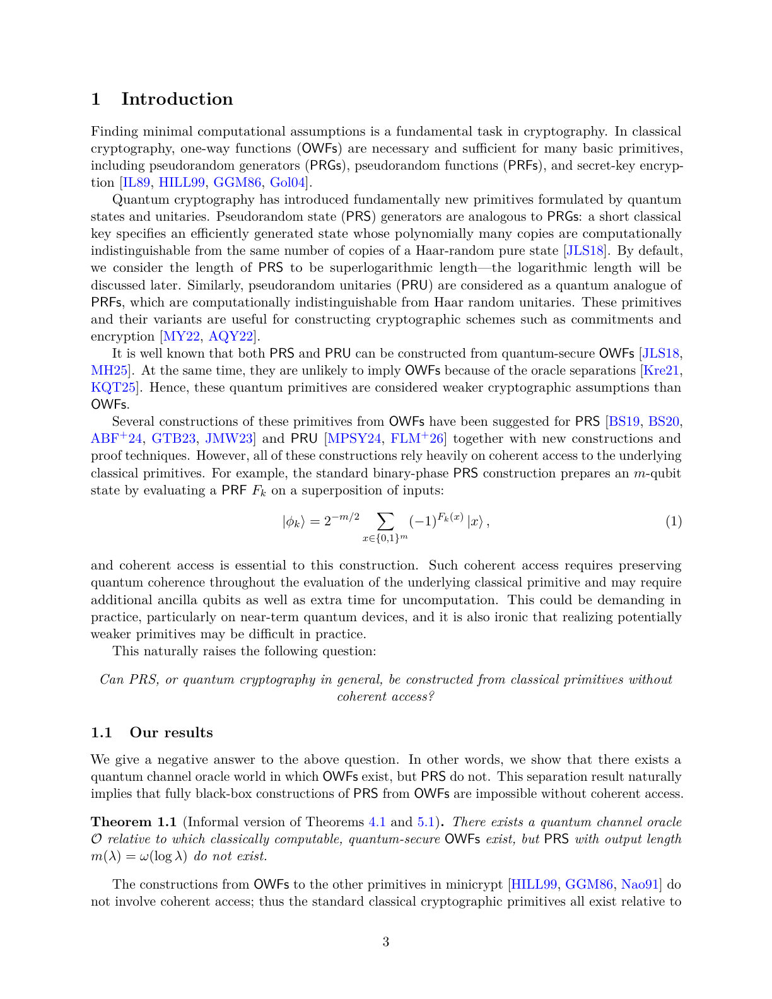
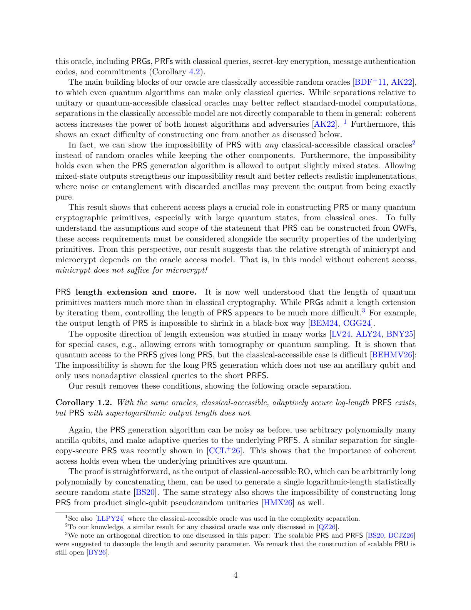
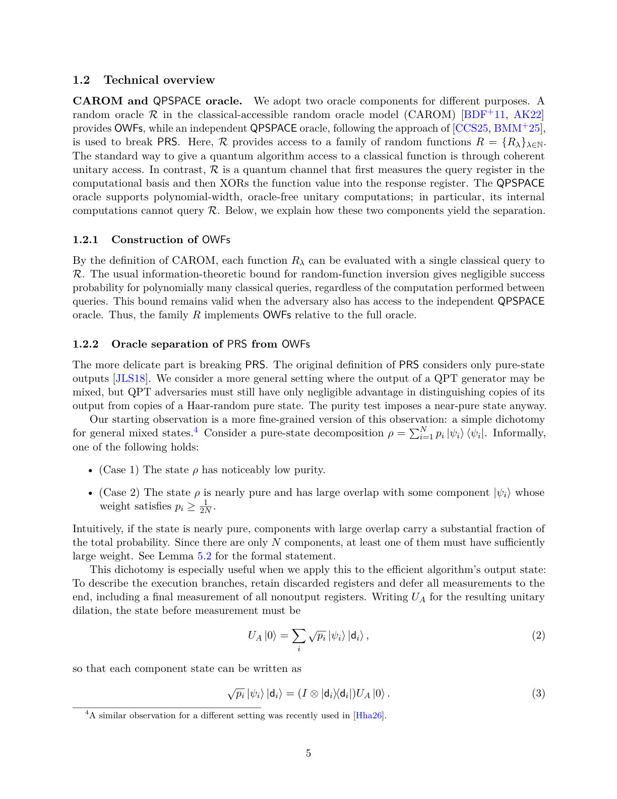
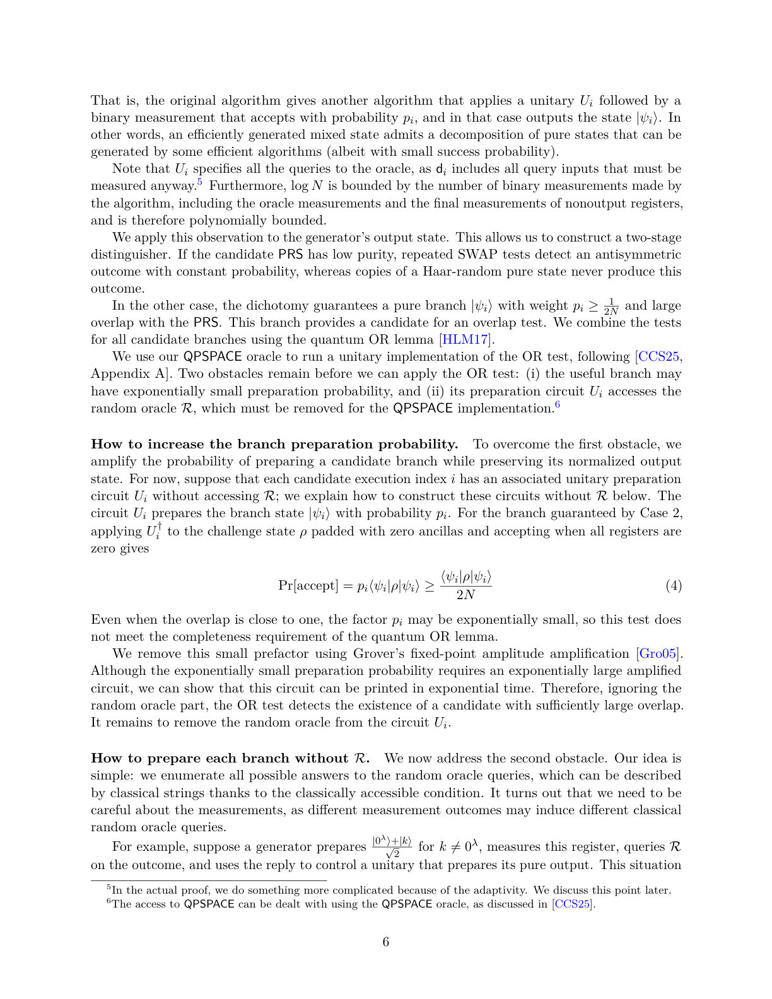
Summary. This theoretical paper establishes a fundamental requirement for constructing quantum pseudorandomness: the process must utilize 'coherent access' to the underlying oracles. By proving an oracle separation, the authors show that standard black-box constructions fail to generate sufficiently long Pseudorandom States without this coherent access mechanism.
Why it may be interesting. While highly abstract, the concept of required 'coherent access' mirrors physical constraints in open quantum systems, where the ability to coherently manipulate quantum information is paramount for tasks like quantum state tomography or quantum error correction.
Main problem. The paper investigates the necessary conditions for constructing quantum cryptographic primitives, specifically Pseudorandom States (PRS), by determining whether 'coherent access' to underlying oracles is required.
Main result. The authors prove an oracle separation showing that quantum-secure One-Way Functions exist, but PRS with superlogarithmic output length do not exist, unless coherent access to the underlying oracles is assumed.
Method. The proof involves constructing a specific quantum oracle model and employing a two-stage distinguishing test combining purity checks and the quantum OR lemma to distinguish PRS outputs from truly random states.
Model / system. The model is purely theoretical, dealing with quantum information primitives like One-Way Functions (OWFs) and Pseudorandom States (PRS) within a quantum oracle access framework.
Key observables. The primary observables are the distinguishability of the output state (PRS vs. Haar-random) using metrics like purity and the success probability of the quantum OR test.
Important parameters / regimes. The key parameters are the output length of the PRS (superlogarithmic vs. logarithmic) and the requirement for coherent versus classical access to the oracle.
Assumptions / limitations. The analysis assumes the existence of quantum-secure OWFs and relies heavily on the mathematical tools of the quantum OR lemma and fixed-point amplitude amplification.
Paper structure. The paper establishes the theoretical need for coherent access, presents the formal oracle separation results by constructing the necessary quantum oracles, and details the technical steps using purity tests and the quantum OR test to prove the impossibility result.
We construct quantum oracles relative to which quantum-secure one-way functions (OWFs) exist but pseudorandom states (PRSs) with superlogarithmic output length do not. At first glance, this appears to contradict the known black-box constructions of PRS generators from quantum-secure OWFs. The distinction lies in the access model to the oracles; our oracle separation uses \emph{classical-accessible} random oracles that can be accessed only classically even by quantum algorithms. In fact, our impossibility of PRSs applies to \emph{any} classically accessible classical oracle in place of the random oracle, while keeping the other oracle component unchanged, showing the need for coherent access in constructing PRSs. We further show that logarithmic output length pseudorandom function-like states (PRFSs) exist relative to our oracles, giving an oracle separation between classically accessible logarithmic length PRFSs and superlogarithmic length PRSs. This shows that fully black-box PRS length extension from logarithmic to superlogarithmic output length must use coherent access to the underlying short PRS.
Authors: Lachlan W. Cronin, Masaya Hiraishi, Luke S. Trainor, Jevon J. Longdell
Type: experiment · Category: other · PDF: https://arxiv.org/pdf/2609.38892v1
Analysis basis: full PDF text, analyzed in chunks
Topic relevance: quantum measurements 1/5
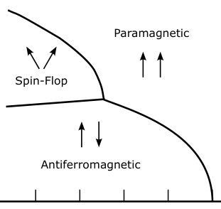
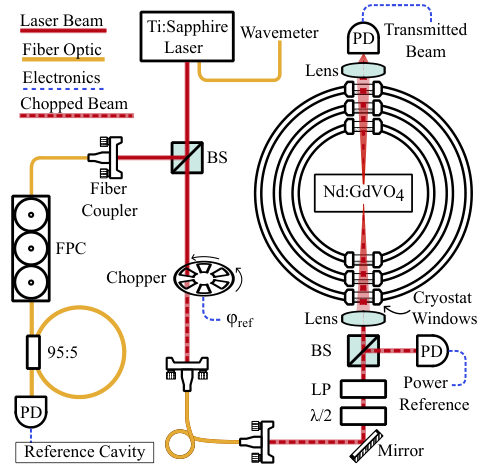
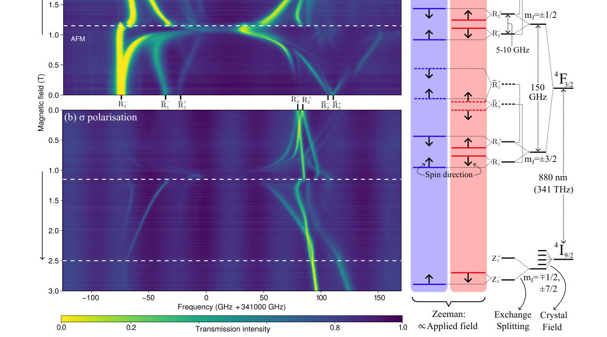
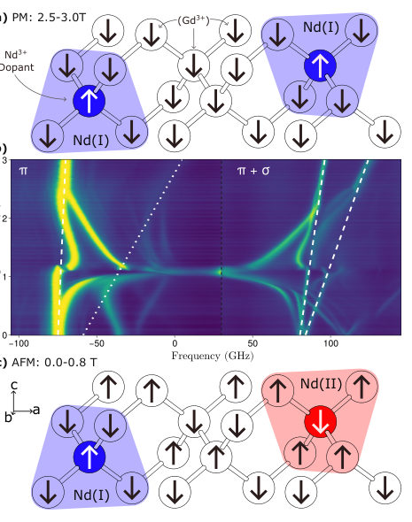
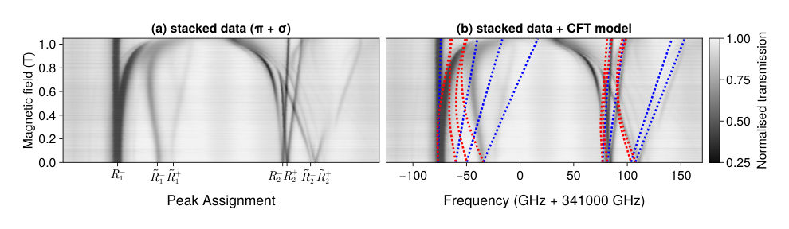
Summary. This paper uses polarization-resolved optical spectroscopy on Nd:GdVO4 to study its electronic structure across different magnetic phases. By analyzing the field-dependent absorption spectra, the authors successfully demonstrated the existence of negative magnetic g-factors. These findings significantly advance the understanding of Nd:GdVO4's potential use in hybrid quantum systems.
Why it may be interesting. The ability to use optical spectroscopy to map out magnetic phase transitions and extract fundamental magnetic parameters like g-factors in a solid-state rare-earth magnet is highly relevant for understanding spin dynamics in quantum materials.
Main problem. The study aims to investigate the optical properties of Nd:GdVO4, specifically to observe and characterize the signs of magnetic g-factors.
Main result. The research successfully demonstrated clear evidence of negative g-factors in the system, providing a detailed spectroscopic foundation for Nd:GdVO4.
Method. Polarization-resolved absorption spectroscopy was performed on Nd:GdVO4 across varying magnetic fields and temperatures.
Model / system. The physical system is Nd-doped gadolinium vanadate (Nd:GdVO4), an antiferromagnet. The analysis employs an expanded Crystal-Field-Theory (CFT) model incorporating Zeeman, exchange, and mean-field interactions.
Key observables. The sign of the magnetic g-factor, the evolution of the 4F3/2 energy manifold, and polarization-dependent absorption spectra ($\sigma$ and $\pi$).
Important parameters / regimes. Temperatures below the 2.5 K Néel temperature, magnetic fields up to 3 T, and the interplay between exchange and Zeeman interactions.
Assumptions / limitations. The analysis assumes the host lattice has D2d point symmetry, and the Nd3+ ion is treated as a Kramers ion.
Figures summary. Figure 1 shows the magnetic phase diagram (AFM, SF, PM). Figure 5 shows overlaid $\sigma$- and $\pi$-polarized absorption spectra in the AFM regime, fitted with the CFT model for two nonequivalent Nd sites.
Paper structure. The paper progresses by establishing the magnetic phases (AFM, SF, PM) via the magnetic field dependence, then using polarization-resolved spectroscopy to probe the electronic transitions, and finally applying CFT modeling to extract fundamental parameters like the g-factor.
Neodymium-doped gadolinium vanadate (Nd:GdVO$_4$) is a popular laser material at room temperature. It has received limited attention for quantum technologies because of the linebroadening effects of disordered gadolinium spins in the host. Here we investigate the optical properties at temperatures below the 2.5 K Néel temperature, revealing narrow optical transitions. We demonstrate that rare earth ions in magnetic hosts give us a new way of observing the signs of magnetic g-factors. The interplay between the exchange and Zeeman interactions means that we see clear evidence of negative g-factors. These results provide a detailed spectroscopic foundation for Nd:GdVO$_4$ and expand the understanding of its candidacy as a material for hybrid quantum systems.
Authors: Mrudula A Mahindrakar, Avhishek Chatterjee
Type: theory · Category: quantum information and computing · PDF: https://arxiv.org/pdf/2609.40128v1
Analysis basis: full PDF text, analyzed in chunks
Topic relevance: quantum measurements 1/5
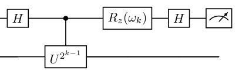
Summary. This work tackles the resource optimization challenge for the Iterative Quantum Phase Estimation Algorithm (IPEA) on noisy quantum hardware. It derives closed-form solutions for allocating a limited computational budget ($W$) across different estimation steps by maximizing the total success probability. The results yield practical 'rules of thumb' for resource allocation, showing how the optimal shot count depends on whether the budget is limited by hardware cost or by the required accuracy.
Why it may be interesting. It provides concrete, resource-aware guidelines for optimizing quantum algorithm execution on near-term hardware by balancing circuit complexity costs against required measurement fidelity.
Main problem. The paper determines the optimal allocation of a finite computational resource budget ($W$) across multiple iterative steps of the IPEA algorithm to maximize the overall probability of correctly estimating the quantum phase.
Main result. The optimal shot allocation ($N_k^*$) depends on the resource regime: in the resource-abundant limit, $N_k^*$ is primarily governed by the error parameters ($c_k$) and is independent of the individual cost scaling ($w_k$).
Method. The problem is formulated as a constrained optimization problem, solved by deriving and analyzing tractable upper and lower surrogate bounds using concentration inequalities, and then applying Lagrangian methods.
Model / system. The model is the Iterative Quantum Phase Estimation Algorithm (IPEA), which is used for phase estimation on NISQ and early fault-tolerant quantum hardware, avoiding the full QFT.
Key observables. The overall probability of successfully estimating the full $L$-bit phase, $P( ext{all } L ext{ bits correct})$.
Important parameters / regimes. Total resource budget ($W$), individual iteration costs ($w_k$), and error mitigation parameters ($q_k$ or $c_k$).
Assumptions / limitations. The analysis assumes that the error probabilities ($q_k$) are small ($q_k \ll 1$), allowing the use of surrogate bounds that converge to the true objective function.
Paper structure. The paper first defines the optimization problem, then derives surrogate bounds, solves the resulting optimization problem using Lagrangian methods for various scaling regimes of $w_k$, and concludes with derived rules of thumb for resource allocation.
The iterative quantum phase estimation algorithm (IPEA) is better suited for NISQ and early fault-tolerant hardware compared to the original algorithm, which requires the inverse quantum Fourier transform. However, current error mitigation and correction implementations lead to imperfect unitaries, causing erroneous phase feedback in IPEA. To improve the reliability of phase bits is to repeat the k^th iteration for the 2^k-th power of the unitary $N_k^*$ times, followed by a majority decision. However, due to variations in their circuit complexities, different iterations incur varying resource costs ($w_k$) and different per-shot error probabilities ($q_k$). Given tight resource constraints, we ask what the optimal number $\{N_k^*: 1\le k \le L\}$ of shots per bit is: $$\arg \max_{\{N_k\}} \mathbb{P}(\text{all } L \text{ bits correct}) \text{ s.t.} \sum_{k=1}^L w_k N_k \le W$$ We obtain closed-form expressions for $N^*_k$ under the conditions: $W \gg \sum_k w_k $(enough for at least one shot per iteration), $w_k$ increases with $k$, $q_k$ are small enough and $L$ is large. We do so by analyzing tractable upper and lower surrogate problems derived via tight concentration and anti-concentration bounds and showing that their solutions converge when $q_k\ll 1$. We observe that when $W\gg \sum_k w_k \ln\! \left(\sum_k w_k\right)$, the optimal $N_k^*$ is proportional to $\frac{\ln\! \left(\sum_k w_k\right)}{c_k}$ and does not depend on individual $w_k$, where $c_k=-\ln\left(2\sqrt{\left(1-\frac{q_k}{2} \right) \frac{q_k}{2}}\right) \propto \ln\frac{1}{q_k}$. However, when $\sum_k w_k \ll W\ll\sum_k w_k \ln\! \left(\sum_k w_k\right)$, the allocation is also (additively) influenced by $\frac{1}{c_k}\ln\frac{1}{w_k}$ for larger values of $k$, i.e., higher powers of unitary. These results lead to simple rules of thumb for resource allocation that may benefit the design of practical systems.
Authors: Toshihiro Yada
Type: theory · Category: statistical mechanics · PDF: https://arxiv.org/pdf/2609.39458v1
Analysis basis: full PDF text, analyzed in chunks
Topic relevance: analog quantum simulation 1/5
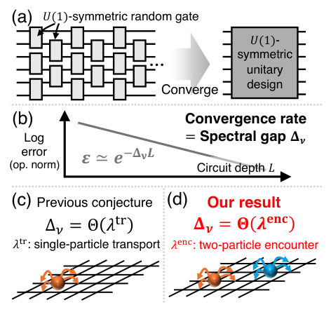
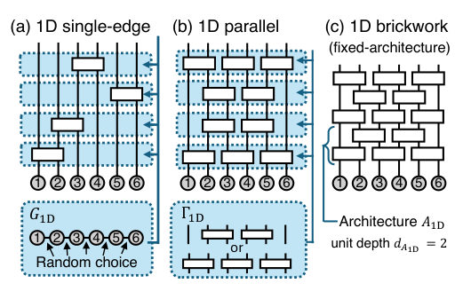
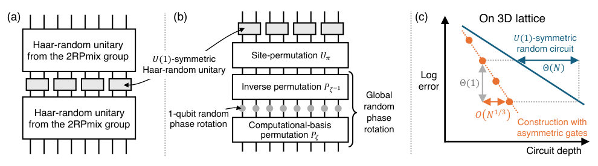
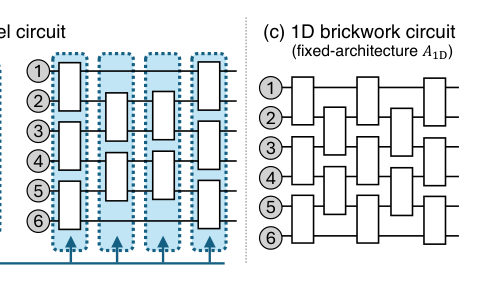
Summary. This work analyzes the rate at which random quantum circuits generate unitary designs under U(1) symmetry. The authors prove that this rate is limited not by single-particle diffusion (charge transport), but by a slower two-particle encounter rate. They also provide a method to bypass this bottleneck using symmetry-breaking gates.
Why it may be interesting. The finding that a two-particle encounter rate sets the bottleneck provides a concrete, non-trivial constraint on how fast quantum randomness can be generated in systems with conservation laws, guiding the design of quantum information protocols.
Main problem. The paper determines the optimal scaling of the unitary k-design formation rate in U(1)-symmetric random circuits, resolving whether charge transport or a slower mechanism governs this rate.
Main result. For k >= 2, the formation rate is governed by the two-particle encounter rate, which is parametrically smaller than the single-particle transport rate, disproving previous conjectures.
Method. The authors establish matching upper and lower bounds on the spectral gap using a novel proof technique based on an auxiliary subgroup ensemble.
Model / system. The system is an N-qubit quantum circuit exhibiting U(1) symmetry, analyzed via its moment operators and convergence to the Haar-random unitary ensemble.
Key observables. Unitary k-design formation rate, spectral gap (Delta_nu), single-particle transport rate (lambda_tr), and two-particle encounter rate (lambda_enc).
Important parameters / regimes. The analysis is focused on k <= O(sqrt(log N)) and compares different circuit geometries (lattices, expander graphs, all-to-all).
Assumptions / limitations. The analysis assumes the circuit is U(1)-symmetric and focuses on the convergence rate characterized by the spectral gap.
Figures summary. Figure 1 compares convergence rates, showing the spectral gap is governed by the encounter rate. Table I summarizes the spectral gap scaling across various geometries, highlighting the encounter rate's dominance.
Paper structure. The paper first introduces the problem of randomness formation under conservation laws, then develops the mathematical framework using moment operators and spectral gaps. It proceeds to derive the lower bound using the auxiliary subgroup ensemble, leading to the main result that the encounter rate sets the bottleneck, and finally discusses protocols to circumvent this bottleneck.
Understanding randomness formation under conservation laws is important both for characterizing chaotic phenomena in isolated quantum systems and for symmetry-constrained quantum information processing. $U(1)$-symmetric random circuits on an $N$-qubit system provide a minimal tractable setting for this problem, in which the formation rate of unitary designs was conjectured to be governed by charge transport in the underlying circuit geometry. However, whether charge transport indeed sets the slowest relaxation mode has remained an open problem, due to the difficulty in deriving a tight lower bound on the symmetric design formation rate. In this work, we resolve this problem by determining the optimal scaling of the unitary $k$-design formation rate for $k\leq O(\sqrt{\log N})$ across a wide range of circuit geometries, including lattices, expander graphs, and all-to-all interactions. In particular, for $k\geq 2$, we find that the formation rate is governed by a two-particle encounter rate---the rate at which two random walkers encounter each other in a given circuit geometry. This encounter rate is parametrically smaller than the single-particle transport rate in many geometries, thereby disproving the previous conjecture. We further establish that this encounter mechanism indeed sets the design formation rate by deriving its matching lower bound with a novel proof technique based on an auxiliary subgroup ensemble. Although this encounter mode imposes a robust bottleneck on design formation in $U(1)$-symmetric random circuits, we also show that this bottleneck can be circumvented by using symmetry-breaking local gates and provide an explicit protocol that achieves faster design formation. These results establish a new picture of randomness formation under conservation laws and provide guiding principles for characterizing and efficiently generating symmetry-constrained randomness.
Authors: Tanner Jackson, Alexey Milekhin
Type: theory · Category: quantum information and computing · PDF: https://arxiv.org/pdf/2609.40032v1
Analysis basis: full PDF text, analyzed in chunks
Topic relevance: analog quantum simulation 1/5
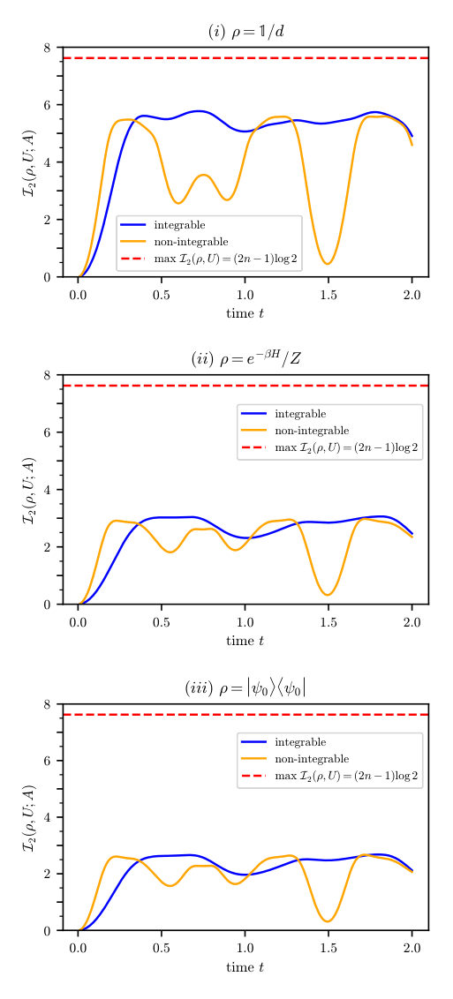
Summary. This paper introduces a generalized Pauli instability measure, $I_\alpha( ho, U)$, to quantify the 'magic' or non-stabilizerness of quantum dynamics. It proves that this measure vanishes if and only if the evolution is Clifford, providing a rigorous way to detect non-Clifford gates. The measure is shown to yield lower bounds on the number of T gates needed to simulate the dynamics in physical systems.
Why it may be interesting. This work provides a powerful, computable diagnostic tool directly linking fundamental quantum information concepts (magic, T-count) to measurable physical correlators in many-body systems.
Main problem. The paper aims to quantify the 'magic' or non-stabilizerness of a quantum evolution, which measures the difficulty of classically simulating the dynamics.
Main result. A generalized Pauli instability measure, $I_\alpha( ho, U)$, was introduced, which is zero if and only if the evolution $U$ is Clifford, and it provides lower bounds on the number of non-Clifford gates (T gates) required for simulation.
Method. The authors adapt Out-of-Time-Order Correlators (OTOCs) to evaluate the instability measure in arbitrary quantum states $ ho$, establishing its basic properties and relating it to stabilizer entropy.
Model / system. The analysis focuses on quantum evolution governed by a unitary $U$ acting on a system of $n$ qubits, utilizing Pauli strings ($P_n$) and considering various states like Gibbs or ground states.
Key observables. The generalized Pauli instability measure, $I_\alpha( ho, U)$, and the expectation value of Pauli correlators $ ext{Tr}( ho A(t) B A(t) B)$.
Important parameters / regimes. The exponent $\alpha$ (often $\alpha=2$), the state $ ho$ (e.g., maximally mixed, Gibbs), and the number of non-Clifford gates ($k$) in the circuit decomposition.
Assumptions / limitations. The faithfulness of the measure requires the state $ ho$ to be full-rank; some bounds rely on approximations for error terms in time evolution.
Figures summary. Figures compare the Pauli instability measure $\mathcal{I}_2( ho, U; A)$ over time $t$ for random-matrix dynamics, showing different growth rates for integrable versus non-integrable Hamiltonians.
Paper structure. The paper develops the general measure $I_\alpha$, proves its basic properties (covariance, additivity), establishes its equivalence to the Clifford property, and then applies it to derive quantitative bounds on the T-gate count for various physical models.
Measures of non-stabilizerness (``magic'') of a quantum evolution quantify how hard it is to simulate on a classical computer. A natural question is how to extract information about magic from physical correlators, for example at finite temperature or in the ground state. In this paper we show how to measure magic using out-of-time-order correlators evaluated in an arbitrary state. For every full-rank state, and in particular for every Gibbs state, the resulting quantity vanishes if and only if the evolution is Clifford. We establish its basic properties, relate it to the stabilizer entropy of the Choi state, and prove that, even with a single fixed probe operator, it gives a lower bound on the number of $T$ gates needed to implement the dynamics in any circuit architecture.
Authors: Pratik Ghosal, Pritam Halder, Ayan Patra, Aditi Sen
Type: theory · Category: quantum information and computing · PDF: https://arxiv.org/pdf/2609.40355v1
Analysis basis: full PDF text, analyzed in chunks
Topic relevance: quantum measurements 1/5
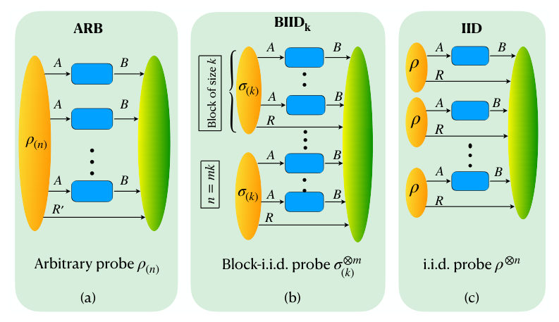
Summary. This paper characterizes the fundamental limits of distinguishing a specific non-mixed-unitary quantum channel from the set of mixed-unitary channels using quantum hypothesis testing. It develops a detailed hierarchy based on probe correlations and memory access, proving that auxiliary memory provides a significant advantage in achieving positive detection exponents. This work deepens the understanding of quantum resource theory applied to channel characterization.
Why it may be interesting. The results provide fundamental resource-theoretic insights into the distinguishability of quantum channels, which has implications for certifying quantum processes and understanding the structure of quantum operations.
Main problem. The paper addresses the quantum hypothesis testing problem of distinguishing an unknown quantum channel $E$ that is specified as non-mixed-unitary ($H_1$) from the set of mixed-unitary channels ($ ext{MU}$) ($H_0$).
Main result. The ability to distinguish these channels depends critically on the probe state structure and whether auxiliary memory is available, establishing a hierarchy of achievable Stein exponents.
Method. The analysis uses the framework of composite quantum hypothesis testing, focusing on parallel discrimination strategies using block-i.i.d. probes and quantifying performance via the Stein exponent.
Model / system. The system involves quantum channels (CPTP maps) acting on quantum states, specifically comparing non-mixed-unitary channels against the set of mixed-unitary channels.
Key observables. The Stein exponent, which quantifies the optimal asymptotic rate of discrimination between the two hypotheses.
Important parameters / regimes. Block size ($k$), availability of auxiliary memory, and the structure of the probe states (i.i.d. vs. entangled).
Assumptions / limitations. The analysis is restricted to parallel discrimination strategies and the asymptotic limit ($n o \infty$).
Paper structure. The paper develops a general framework using block-i.i.d. probes, deriving memoryless and memory-assisted Stein exponents. It then establishes strict separations by comparing results for fully i.i.d. probes, product probes, entangled probes, and finally showing the advantage conferred by auxiliary memory.
Given multiple uses of an unknown quantum channel, we determine whether it is a specified non-mixed-unitary channel or belongs to the set of mixed-unitary channels. Formulating this as a composite channel hypothesis testing problem, we characterize the Stein exponents achievable by parallel strategies under progressively weaker restrictions on probe states and auxiliary memory. In particular, we consider block-i.i.d. probes, which allow arbitrary correlations within blocks of fixed size while remaining i.i.d. across blocks, and derive finite-letter expressions of the corresponding Stein exponents. Varying the block size, which interpolates between fully i.i.d. and arbitrary probes, together with further restrictions on intra-block correlations and access to auxiliary memory, results in a multifaceted hierarchy. We establish several strict separations within this hierarchy. Without auxiliary memory, we prove that fully i.i.d. probes yield a vanishing Stein exponent for every unital non-mixed-unitary channel, while blocks of three product probes suffice to obtain a strictly positive exponent for the qutrit Werner-Holevo channel. For block size two, although product probes seem to be insufficient for O(3)-covariant channels, an entangled probe achieves a strictly positive exponent for the qutrit Werner-Holevo channel, even though every maximally entangled probe fails. In contrast, auxiliary memory makes fully i.i.d. probes sufficient by yielding a strictly positive exponent for every non-mixed-unitary channel, even without requiring input-reference entanglement, and this exponent admits a lower bound determined by the diamond-norm distance from the mixed-unitary set. Moreover, for odd-dimensional Werner-Holevo channels, we find that this exponent is infinite, with every full-Schmidt-rank pure state being optimal.
Authors: Dimitrios Thanos, Caesnan Leditto, Adam Wesolowski, Andreea-Iulia Lefterovici, Mahtab Yaghubi Rad
Type: theory · Category: quantum information and computing · PDF: https://arxiv.org/pdf/2609.40216v1
Analysis basis: full PDF text, analyzed in chunks
Topic relevance: quantum measurements 1/5
Summary. This paper introduces a novel quantum algorithm to estimate the torsion order of a simplicial complex's homology group, a topological invariant that standard methods fail to capture. It achieves this by quantumly estimating log pseudodeterminants derived from the boundary-Laplacian eigenvalues. The work establishes a quantum advantage over classical methods for this specific, torsion-sensitive measurement.
Why it may be interesting. While the application is in TDA, the core methodology involves advanced quantum algorithms (QSVT, amplitude estimation) applied to spectral properties of large, structured matrices, which is highly relevant to quantum simulation and quantum information theory.
Main problem. The central problem is developing quantum methods to estimate torsion-sensitive topological invariants, such as the torsion order in integral homology, which are missed by standard Betti number calculations in Topological Data Analysis (TDA).
Main result. The authors present a first provably correct quantum estimator for the integral-homology torsion order, achieving a quadratic query advantage over classical randomized algorithms for certain restricted families.
Method. The method employs quantum spectral techniques, specifically using bottom-left Quantum Singular Value Transformation (QSVT) amplitude estimation to estimate log pseudodeterminants derived from the boundary-Laplacian eigenvalues of a simplicial complex.
Model / system. The analysis is performed on abstract simplicial complexes, $X$, whose topology is characterized by homology groups $ ext{H}_j(X; \mathbb{Z})$. The quantum computation is designed to probe the spectral properties of the boundary maps associated with these complexes.
Key observables. Torsion order of the integral homology group, log pseudodeterminants ($\ell_r(X)$), and higher critical group orders.
Important parameters / regimes. Query access, required accuracy, spectral gaps, and the dimension $D$ of the candidate space.
Assumptions / limitations. The quantum algorithm relies on explicit assumptions regarding block-encoding, state-preparation, and spectral gaps; furthermore, lower-homology correction terms must be supplied algebraically.
Figures summary. Figure 1 illustrates the entire 'Quantum-to-topological pipeline,' showing the flow from boundary map encoding through QSVT amplitude estimation to the final topological output. Table 1 summarizes the specific combinations of spectral estimates needed to yield various topological counts.
Paper structure. The paper is structured around establishing the theoretical link between spectral sums (log pseudodeterminants) and topological invariants using matrix-tree identities, followed by the development and rigorous analysis of the quantum algorithm and its associated error bounds.
Betti numbers are central to topological data analysis but fail to capture torsion in integral homology. Torsion can distinguish topological structures with identical Betti numbers, and examples from classical topological data analysis show that it can affect the topology inferred from data. Related torsion-sensitive quantities are also known to have practical applications in graph-based machine learning, including biomedical applications. We investigate how quantum spectral methods can access this additional information. Log pseudodeterminants, obtained by summing the logarithms of the nonzero boundary-Laplacian eigenvalues, summarize spectral information about a simplicial complex. Under explicit topological assumptions, an alternating combination of these quantities gives the size of a higher critical group, the higher-dimensional analogue of a graph sandpile group. With stronger certification, a related construction recovers the size of the torsion subgroup in homology itself. This is, to our knowledge, the first provably correct quantum estimator of integral-homology torsion order. We give a new quantum algorithm for estimating these quantities, with explicit dependence on how the input is queried, the required accuracy, and the spectral gaps. Exact spectra for balanced multipartite clique complexes provide favorable gaps, and a related construction gives an explicit torsion-bearing benchmark. With compact query access, the algorithm need not construct the exponentially large boundary matrices explicitly. For a restricted torsion-bearing family, a tailored amplitude-estimation routine uses quadratically fewer queries than any randomized classical algorithm given comparable access when estimating the log pseudodeterminant. Estimating the full, unnormalized quantity to fixed additive error still costs in proportion to the candidate-space dimension $D$.
Authors: Maxwell Gold, Sarah Hagen, Daniel Alabi, Eric Chitambar
Type: theory · Category: quantum information and computing · PDF: https://arxiv.org/pdf/2609.38452v1
Analysis basis: full PDF text, analyzed in chunks
Topic relevance: quantum measurements 1/5
Summary. This work introduces Quantum Secure Non-Interactive Reductions (QSNIR) to analyze the security of transforming quantum correlations. It establishes that the privacy loss can be calculated exactly using Semidefinite Programming (SDP) and proves a relationship between this quantum privacy measure and Minimum-Error State Discrimination (MED). This provides a powerful, assumption-free tool for quantifying information leakage in quantum cryptography.
Why it may be interesting. While focused on quantum information theory, the rigorous mathematical tools developed (SDP formulations for operational security) are highly relevant to characterizing resource limitations in complex quantum systems.
Main problem. The paper formalizes and analyzes Quantum Secure Non-Interactive Reductions (QSNIR), extending classical secure reductions to cases involving bipartite quantum states as resources.
Main result. QSNIR privacy is shown to be computable exactly via a strongly dual Semidefinite Program (SDP) pair, and this privacy measure is lower-bounded by a decision problem related to Minimum-Error State Discrimination (MED).
Method. The analysis uses simulation-based security frameworks, operationalizing privacy via a 'guessing game' solved using Semidefinite Programming (SDP) techniques.
Model / system. The core model involves bipartite quantum states used as correlations, extending the analysis from purely classical resources to include quantum entanglement.
Key observables. QSNIR privacy error ($\delta_{QSNIR}$), MED privacy error ($\delta_{MED}$), and one-shot leakage for 2PC preprocessing correlations.
Important parameters / regimes. The analysis involves parameters defining the quantum states and the security parameters $(\epsilon, \delta_A, \delta_B)$ for the reduction.
Assumptions / limitations. The framework avoids relying on computational assumptions like pseudorandomness or one-way functions, focusing on information-theoretic security.
Figures summary. Figure 1 illustrates the QSNIR process for correctness and privacy games; Table 1 reports optimal privacy errors for various 2PC correlations.
Paper structure. The paper develops the QSNIR framework, derives the SDP formulation for privacy, establishes the lower bound via MED, and applies the results to compute exact one-shot errors for specific quantum computation primitives.
Efficient models for secure computation often rely on offline preprocessed correlations, which subsequently enable private online computation from minimal assumptions. Within these models, the study of secure non-interactive reductions (SNIR) formalizes when one classical correlation can be non-interactively transformed into another, while guaranteeing information-theoretic simulation-based privacy. In this work, we introduce quantum secure non-interactive reductions (QSNIR), a natural extension of SNIR, in which the source and target resource are each a bipartite quantum state. Specifically, when the target resource is classical, our framework enables us to analyze the problem of disseminating private correlations from entanglement, in addition to classical resources. Our primary technical result is that QSNIR privacy in this context can be computed exactly via a semidefinite program (SDP) pair that quantifies an error operationally rooted in a simulation-based cheating advantage. We prove that QSNIR privacy is lower-bounded by a decision problem related to minimum-error state discrimination (MED), and use both definitions to compute exact one-shot privacy errors for universal two-party computation (2PC) preprocessing correlations.
Authors: Prabhanjan Ananth, Yao-Ting Lin
Type: theory · Category: quantum information and computing · PDF: https://arxiv.org/pdf/2609.38894v1
Analysis basis: full PDF text, analyzed in chunks
Topic relevance: quantum measurements 1/5
Summary. This paper develops a quantum time-lock puzzle scheme operating in the Quantum Random Oracle Model. It overcomes classical limitations by encoding the puzzle in quantum states, allowing for a construction that is easy to generate but computationally hard to solve. The security is rigorously proven by bounding the adversary's success probability using advanced quantum information techniques.
Why it may be interesting. While the core topic is quantum cryptography, the rigorous application of quantum information theory tools (like list-one-wayness and hybrid arguments) to establish computational hardness is highly relevant to understanding the limits of quantum computation in general.
Main problem. To construct and prove the security of Quantum Time-Lock Puzzles (QTLPs) that allow hiding a message requiring significantly more sequential computation time to recover than to generate, even against quantum adversaries.
Main result. The authors successfully construct a QTLP scheme in the Quantum Random Oracle Model (QROM) that achieves generation in one oracle round and solves in $O(T)$ rounds, resolving an open problem in the field.
Method. The security proof relies on advanced quantum information techniques, including list-one-wayness lemmas, hybrid arguments, and bounding the success probability using quantum reprogramming arguments in the QROM.
Model / system. The puzzle is encoded in a quantum state, $|\psi angle = U_a|x angle$, where $\{U_a\}$ is a public family of unitaries acting on qubits. The security analysis is conducted within the Quantum Random Oracle Model (QROM).
Key observables. Success probability of the adversary guessing the solution bit, which is bounded by $1/2 + ext{negl}(\lambda)$.
Important parameters / regimes. Delay parameter $T$, security parameter $\lambda$, and the number of query rounds $r$, which must satisfy $r = o(T)$.
Assumptions / limitations. The construction assumes the existence of unitaries satisfying a small overlap condition ($\le \epsilon$) for distinct pairs, and the analysis requires specific parameter choices to ensure the final bound is negligible.
Paper structure. The paper first establishes the necessity of quantum states to overcome classical impossibility results. It then details the construction of the QTLP using unitaries and proceeds through detailed security proofs in the QROM, culminating in bounding the adversary's success probability using hybrid arguments.
A time-lock puzzle allows a sender to hide a message in a puzzle such that recovering the message requires substantially more sequential computation than the time required to generate the puzzle, even when parallel computation is allowed. Applications of time-lock puzzles include timed-release encryption, sealed-bid auctions, electronic voting, fair contract signing, coin flipping, and Byzantine consensus. However, time-lock puzzles are known to be impossible in the classical random oracle model. To overcome the classical barrier, in this work we consider quantum time-lock puzzles, in which the puzzle itself is a quantum state. Our construction in the quantum random oracle model achieves generation in one oracle round, solving in at most $T$ oracle rounds, and security against polynomial-width quantum adversaries of depth $o(T)$ for every polynomially bounded delay $T=T(λ)$, resolving an open problem posed by Mahmoody, Moran, and Vadhan (2011).
Authors: Pui Hang Lee, Pui-Yee Lee, Bjørn Kjos-Hanssen
Type: theory · Category: quantum information and computing · PDF: https://arxiv.org/pdf/2609.40154v1
Analysis basis: full PDF text, analyzed in chunks
Topic relevance: quantum measurements 1/5
Summary. This paper introduces the quantum Černý complexity, $\mathrm{qc}(w)$, quantifying the minimum quantum dimension needed for a quantum automaton to synchronize. While it establishes a quadratic saving over classical bounds, the authors reveal counter-intuitive results showing that for certain words, the complexity is constant, suggesting that a simple quantum analogue of the classical Černý function does not exist.
Why it may be interesting. It provides a rigorous theoretical framework for understanding the limitations of quantum computation models, particularly concerning state preparation and synchronization, which has implications for quantum error correction and quantum control.
Main problem. The paper defines and analyzes the quantum Černý complexity, $\mathrm{qc}(w)$, which measures the minimum dimension required for a quantum automaton to synchronize to a specific state using a given binary word $w$.
Main result. The authors establish a quadratic upper bound, $\mathrm{qc}(w) \le \lceil\sqrt{|w|+1}\, ceil$, but also show that for certain words like $01^n0$, the complexity remains constant ($\mathrm{qc}(01^n0)=2$), implying no simple quantum analogue of the classical Černý function exists.
Method. The analysis involves linearizing the synchronization condition using the space of traceless Hermitian matrices and employing perturbative constructions to derive bounds.
Model / system. The model uses quantum channels ($A_0, A_1$) acting on $d imes d$ density matrices, representing the evolution of a quantum automaton based on the input word $w$.
Key observables. Quantum Černý complexity ($\mathrm{qc}(w)$), the dimension $d$, and the target state (mixed vs. pure).
Important parameters / regimes. Word length $|w|$, system dimension $d$, and the structure of the input word (e.g., $0^m$ or $01^n0$).
Assumptions / limitations. The analysis relies on the ability to perturb channels using the completely depolarizing channel, and the pure-target variant ($\mathrm{qcp}$) imposes stricter constraints.
Paper structure. The paper introduces $\mathrm{qc}(w)$, derives general bounds, analyzes extremal cases like constant words, and then contrasts this with the pure-target variant ($\mathrm{qcp}$), demonstrating a dimension increase when purity is required.
We introduce the quantum Černý complexity $\mathrm{qc}(w)$ of a binary word $w$: the least dimension $d$ for which there exist quantum channels $A_0,A_1$ on $d\times d$ density matrices and a start state $ρ_0$ such that $w$ is the unique shortest word whose associated channel is constant on the reachable set. We show that $2\le\mathrm{qc}(w)\le\lceil\sqrt{|w|+1}\,\rceil$ for every nonempty $w$, a quadratic saving over the classical analogue, and that constant words are extremal: $\mathrm{qc}(0^m)=\lceil\sqrt{m+1}\,\rceil$. In contrast, $\mathrm{qc}(01^n0)=2$ for every $n\ge 1$, realized by a single qubit whose rotation angle acts as a counter; consequently there is no quantum analogue of the Černý function, and $\mathrm{qc}$ is strongly anti-correlated with intuitive notions of descriptive complexity. We further study the variant $\mathrm{qcp}$ in which the synchronization target is required to be a pure state. We prove that in dimension $2$ no word of length at least $2$ can be a unique shortest synchronizing word with pure target, and we exhibit an explicit qutrit instance, combining a coherent rotation with a measure-and-funnel channel, achieving $\mathrm{qcp}(01^n0)=3$ with target a computational basis state and with synchronization holding universally over all input states. Thus purity of the reset state costs exactly one dimension on this family. We also observe that $\mathrm{qc}$ is computable, by reduction to the first-order theory of the reals.
← Index · ← Previous · Next →